In Chapter 10 "Gases", you learned that attractive intermolecular forces cause most gases to condense to liquids at high pressure, low temperature, or both. Substances that normally are liquids are held together by exactly the same forces that are responsible for the liquefaction of gases. One such substance is water, the solvent in which all biochemical reactions take place. Because of its thermal properties, water also modulates Earth’s temperature, maintaining a temperature range suitable for life. Other liquids are used to manufacture objects that we use every day—for example, a solid material is converted to a liquid, the liquid is injected into a mold, and it is then solidified into complex shapes under conditions that are carefully controlled. To understand such processes, our study of the macroscopic properties of matter must include an understanding of the properties of liquids and the interconversion of the three states of matter: gases, liquids, and solids.
Water beading up on the surface of a freshly waxed car. The waxed, nonpolar surface does not interact strongly with the polar water molecules. The absence of attractive interactions causes the water to form round beads.
In this chapter, we look more closely at the intermolecular forces that are responsible for the properties of liquids, describe some of the unique properties of liquids compared with the other states of matter, and then consider changes in state between liquids and gases or solids. By the end of the chapter, you will understand what is happening at the molecular level when you dry yourself with a towel, why you feel cold when you come out of the water, why ice is slippery, and how it is possible to decaffeinate coffee without removing important flavor components. You will also learn how liquid crystal display (LCD) devices in electronic devices function, and how adhesive strips used to measure body temperature change color to indicate a fever.
The kinetic molecular theory of gases described in Chapter 10 "Gases" gives a reasonably accurate description of the behavior of gases. A similar model can be applied to liquids, but it must take into account the nonzero volumes of particles and the presence of strong intermolecular attractive forces.
In a gas, the distance between molecules, whether monatomic or polyatomic, is very large compared with the size of the molecules; thus gases have a low density and are highly compressible. In contrast, the molecules in liquids are very close together, with essentially no empty space between them. As in gases, however, the molecules in liquids are in constant motion, and their kinetic energy (and hence their speed) depends on their temperature. We begin our discussion by examining some of the characteristic properties of liquids to see how each is consistent with a modified kinetic molecular description.
The molecules of a liquid are packed relatively close together. Consequently, liquids are much denser than gases. The density of a liquid is typically about the same as the density of the solid state of the substance. Densities of liquids are therefore more commonly measured in units of grams per cubic centimeter (g/cm3) or grams per milliliter (g/mL) than in grams per liter (g/L), the unit commonly used for gases.
Liquids exhibit short-range order because strong intermolecular attractive forces cause the molecules to pack together rather tightly. Because of their higher kinetic energy compared to the molecules in a solid, however, the molecules in a liquid move rapidly with respect to one another. Thus unlike the ions in the ionic solids discussed in Chapter 8 "Ionic versus Covalent Bonding", Section 8.2 "Ionic Bonding", the molecules in liquids are not arranged in a repeating three-dimensional array. Unlike the molecules in gases, however, the arrangement of the molecules in a liquid is not completely random.
Liquids have so little empty space between their component molecules that they cannot be readily compressed. Compression would force the atoms on adjacent molecules to occupy the same region of space.
The intermolecular forces in liquids are strong enough to keep them from expanding significantly when heated (typically only a few percent over a 100°C temperature range). Thus the volumes of liquids are somewhat fixed. Notice from Table 11.1 "The Density of Water at Various Temperatures" that the density of water, for example, changes by only about 3% over a 90-degree temperature range.
Table 11.1 The Density of Water at Various Temperatures
| T (°C) | Density (g/cm3) |
|---|---|
| 0 | 0.99984 |
| 30 | 0.99565 |
| 60 | 0.98320 |
| 90 | 0.96535 |
Molecules in liquids diffuse because they are in constant motion (Figure 11.1 "Molecular Diffusion in a Liquid"). A molecule in a liquid cannot move far before colliding with another molecule, however, so the mean free path in liquids is very short, and the rate of diffusion is much slower than in gases.
Figure 11.1 Molecular Diffusion in a Liquid

A drop of an aqueous solution containing a marker dye is added to a larger volume of water. As it diffuses, the color of the dye becomes fainter at the edges.
Liquids can flow, adjusting to the shape of their containers, because their molecules are free to move. This freedom of motion and their close spacing allow the molecules in a liquid to move rapidly into the openings left by other molecules, in turn generating more openings, and so forth (Figure 11.2 "Why Liquids Flow").
Figure 11.2 Why Liquids Flow

Molecules in a liquid are in constant motion. Consequently, when the flask is tilted, molecules move to the left and down due to the force of gravity, and the openings are occupied by other molecules. The result is a net flow of liquid out of the container.
The properties of liquids can be explained using a modified version of the kinetic molecular theory of gases described in Chapter 10 "Gases". This model explains the higher density, greater order, and lower compressibility of liquids versus gases; the thermal expansion of liquids; why they diffuse; and why they adopt the shape (but not the volume) of their containers.
A liquid, unlike a gas, is virtually incompressible. Explain what this means using macroscopic and microscopic descriptions. What general physical properties do liquids share with solids? What properties do liquids share with gases?
Using a kinetic molecular approach, discuss the differences and similarities between liquids and gases with regard to
How must the ideal gas law be altered to apply the kinetic molecular theory of gases to liquids? Explain.
Why are the root mean square speeds of molecules in liquids less than the root mean square speeds of molecules in gases?
The properties of liquids are intermediate between those of gases and solids but are more similar to solids. In contrast to intramolecular forces, such as the covalent bonds that hold atoms together in molecules and polyatomic ions, intermolecular forces hold molecules together in a liquid or solid. Intermolecular forces are generally much weaker than covalent bonds. For example, it requires 927 kJ to overcome the intramolecular forces and break both O–H bonds in 1 mol of water, but it takes only about 41 kJ to overcome the intermolecular attractions and convert 1 mol of liquid water to water vapor at 100°C. (Despite this seemingly low value, the intermolecular forces in liquid water are among the strongest such forces known!) Given the large difference in the strengths of intra- and intermolecular forces, changes between the solid, liquid, and gaseous states almost invariably occur for molecular substances without breaking covalent bonds.
The properties of liquids are intermediate between those of gases and solids but are more similar to solids.
Intermolecular forces determine bulk properties such as the melting points of solids and the boiling points of liquids. Liquids boil when the molecules have enough thermal energy to overcome the intermolecular attractive forces that hold them together, thereby forming bubbles of vapor within the liquid. Similarly, solids melt when the molecules acquire enough thermal energy to overcome the intermolecular forces that lock them into place in the solid.
Intermolecular forces are electrostatic in nature; that is, they arise from the interaction between positively and negatively charged species. Like covalent and ionic bonds, intermolecular interactions are the sum of both attractive and repulsive components. Because electrostatic interactions fall off rapidly with increasing distance between molecules, intermolecular interactions are most important for solids and liquids, where the molecules are close together. These interactions become important for gases only at very high pressures, where they are responsible for the observed deviations from the ideal gas law at high pressures. (For more information on the behavior of real gases and deviations from the ideal gas law, see Chapter 10 "Gases", Section 10.8 "The Behavior of Real Gases".)
In this section, we explicitly consider three kinds of intermolecular interactions:There are two additional types of electrostatic interaction that you are already familiar with: the ion–ion interactions that are responsible for ionic bonding and the ion–dipole interactions that occur when ionic substances dissolve in a polar substance such as water. (For more information on ionic bonding, see Chapter 8 "Ionic versus Covalent Bonding". For more information on the dissolution of ionic substances, see Chapter 4 "Reactions in Aqueous Solution" and Chapter 5 "Energy Changes in Chemical Reactions".) dipole–dipole interactions, London dispersion forces, and hydrogen bonds. The first two are often described collectively as van der Waals forcesThe intermolecular forces known as dipole–dipole interactions and London dispersion forces..
Recall from Chapter 9 "Molecular Geometry and Covalent Bonding Models" that polar covalent bonds behave as if the bonded atoms have localized fractional charges that are equal but opposite (i.e., the two bonded atoms generate a dipole). If the structure of a molecule is such that the individual bond dipoles do not cancel one another, then the molecule has a net dipole moment. Molecules with net dipole moments tend to align themselves so that the positive end of one dipole is near the negative end of another and vice versa, as shown in part (a) in Figure 11.3 "Attractive and Repulsive Dipole–Dipole Interactions". These arrangements are more stable than arrangements in which two positive or two negative ends are adjacent (part (c) in Figure 11.3 "Attractive and Repulsive Dipole–Dipole Interactions"). Hence dipole–dipole interactionsA kind of intermolecular interaction (force) that results between molecules with net dipole moments., such as those in part (b) in Figure 11.3 "Attractive and Repulsive Dipole–Dipole Interactions", are attractive intermolecular interactions, whereas those in part (d) in Figure 11.3 "Attractive and Repulsive Dipole–Dipole Interactions" are repulsive intermolecular interactions. Because molecules in a liquid move freely and continuously, molecules always experience both attractive and repulsive dipole–dipole interactions simultaneously, as shown in Figure 11.4 "Both Attractive and Repulsive Dipole–Dipole Interactions Occur in a Liquid Sample with Many Molecules". On average, however, the attractive interactions dominate.
Figure 11.3 Attractive and Repulsive Dipole–Dipole Interactions
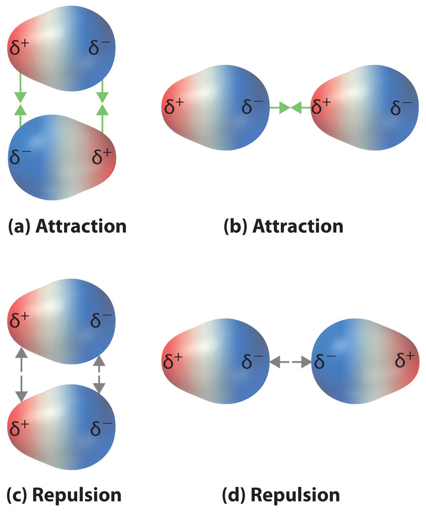(a and b) Molecular orientations in which the positive end of one dipole (δ+) is near the negative end of another (δ−) (and vice versa) produce attractive interactions. (c and d) Molecular orientations that juxtapose the positive or negative ends of the dipoles on adjacent molecules produce repulsive interactions.
Figure 11.4 Both Attractive and Repulsive Dipole–Dipole Interactions Occur in a Liquid Sample with Many Molecules
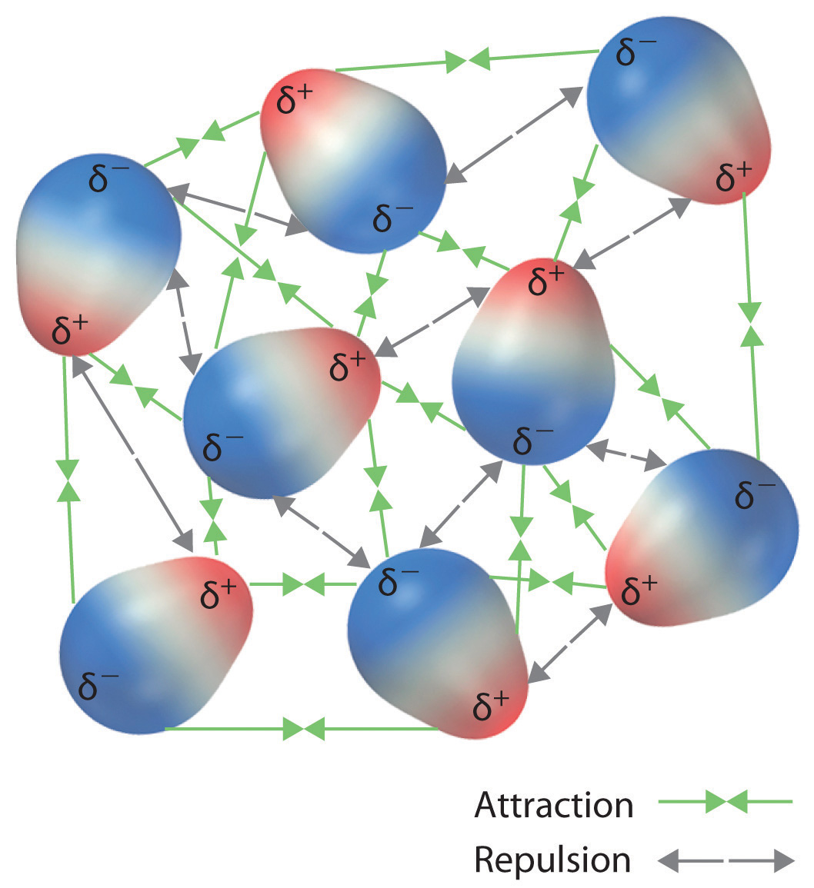Because each end of a dipole possesses only a fraction of the charge of an electron, dipole–dipole interactions are substantially weaker than the interactions between two ions, each of which has a charge of at least ±1, or between a dipole and an ion, in which one of the species has at least a full positive or negative charge. In addition, the attractive interaction between dipoles falls off much more rapidly with increasing distance than do the ion–ion interactions we considered in Chapter 8 "Ionic versus Covalent Bonding". Recall that the attractive energy between two ions is proportional to 1/r, where r is the distance between the ions. Doubling the distance (r → 2r) decreases the attractive energy by one-half. In contrast, the energy of the interaction of two dipoles is proportional to 1/r6, so doubling the distance between the dipoles decreases the strength of the interaction by 26, or 64-fold. Thus a substance such as HCl, which is partially held together by dipole–dipole interactions, is a gas at room temperature and 1 atm pressure, whereas NaCl, which is held together by interionic interactions, is a high-melting-point solid. Within a series of compounds of similar molar mass, the strength of the intermolecular interactions increases as the dipole moment of the molecules increases, as shown in Table 11.2 "Relationships between the Dipole Moment and the Boiling Point for Organic Compounds of Similar Molar Mass". Using what we learned in Chapter 9 "Molecular Geometry and Covalent Bonding Models" about predicting relative bond polarities from the electronegativities of the bonded atoms, we can make educated guesses about the relative boiling points of similar molecules.
Table 11.2 Relationships between the Dipole Moment and the Boiling Point for Organic Compounds of Similar Molar Mass
| Compound | Molar Mass (g/mol) | Dipole Moment (D) | Boiling Point (K) |
|---|---|---|---|
| C3H6 (cyclopropane) | 42 | 0 | 240 |
| CH3OCH3 (dimethyl ether) | 46 | 1.30 | 248 |
| CH3CN (acetonitrile) | 41 | 3.9 | 355 |
The attractive energy between two ions is proportional to 1/r, whereas the attractive energy between two dipoles is proportional to 1/r6.
Arrange ethyl methyl ether (CH3OCH2CH3), 2-methylpropane [isobutane, (CH3)2CHCH3], and acetone (CH3COCH3) in order of increasing boiling points. Their structures are as follows:
Given: compounds
Asked for: order of increasing boiling points
Strategy:
Compare the molar masses and the polarities of the compounds. Compounds with higher molar masses and that are polar will have the highest boiling points.
Solution:
The three compounds have essentially the same molar mass (58–60 g/mol), so we must look at differences in polarity to predict the strength of the intermolecular dipole–dipole interactions and thus the boiling points of the compounds. The first compound, 2-methylpropane, contains only C–H bonds, which are not very polar because C and H have similar electronegativities. It should therefore have a very small (but nonzero) dipole moment and a very low boiling point. Ethyl methyl ether has a structure similar to H2O; it contains two polar C–O single bonds oriented at about a 109° angle to each other, in addition to relatively nonpolar C–H bonds. As a result, the C–O bond dipoles partially reinforce one another and generate a significant dipole moment that should give a moderately high boiling point. Acetone contains a polar C=O double bond oriented at about 120° to two methyl groups with nonpolar C–H bonds. The C–O bond dipole therefore corresponds to the molecular dipole, which should result in both a rather large dipole moment and a high boiling point. Thus we predict the following order of boiling points: 2-methylpropane < ethyl methyl ether < acetone. This result is in good agreement with the actual data: 2-methylpropane, boiling point = −11.7°C, and the dipole moment (μ) = 0.13 D; methyl ethyl ether, boiling point = 7.4°C and μ = 1.17 D; acetone, boiling point = 56.1°C and μ = 2.88 D.
Exercise
Arrange carbon tetrafluoride (CF4), ethyl methyl sulfide (CH3SC2H5), dimethyl sulfoxide [(CH3)2S=O], and 2-methylbutane [isopentane, (CH3)2CHCH2CH3] in order of decreasing boiling points.
Answer: dimethyl sulfoxide (boiling point = 189.9°C) > ethyl methyl sulfide (boiling point = 67°C) > 2-methylbutane (boiling point = 27.8°C) > carbon tetrafluoride (boiling point = −128°C)
Thus far we have considered only interactions between polar molecules, but other factors must be considered to explain why many nonpolar molecules, such as bromine, benzene, and hexane, are liquids at room temperature, and others, such as iodine and naphthalene, are solids. Even the noble gases can be liquefied or solidified at low temperatures, high pressures, or both (Table 11.3 "Normal Melting and Boiling Points of Some Elements and Nonpolar Compounds").
What kind of attractive forces can exist between nonpolar molecules or atoms? This question was answered by Fritz London (1900–1954), a German physicist who later worked in the United States. In 1930, London proposed that temporary fluctuations in the electron distributions within atoms and nonpolar molecules could result in the formation of short-lived instantaneous dipole momentsThe short-lived dipole moment in atoms and nonpolar molecules caused by the constant motion of their electrons, which results in an asymmetrical distribution of charge at any given instant., which produce attractive forces called London dispersion forcesA kind of intermolecular interaction (force) that results from temporary fluctuations in the electron distribution within atoms and nonpolar molecules. between otherwise nonpolar substances.
Table 11.3 Normal Melting and Boiling Points of Some Elements and Nonpolar Compounds
| Substance | Molar Mass (g/mol) | Melting Point (°C) | Boiling Point (°C) |
|---|---|---|---|
| Ar | 40 | −189.4 | −185.9 |
| Xe | 131 | −111.8 | −108.1 |
| N2 | 28 | −210 | −195.8 |
| O2 | 32 | −218.8 | −183.0 |
| F2 | 38 | −219.7 | −188.1 |
| I2 | 254 | 113.7 | 184.4 |
| CH4 | 16 | −182.5 | −161.5 |
Consider a pair of adjacent He atoms, for example. On average, the two electrons in each He atom are uniformly distributed around the nucleus. Because the electrons are in constant motion, however, their distribution in one atom is likely to be asymmetrical at any given instant, resulting in an instantaneous dipole moment. As shown in part (a) in Figure 11.5 "Instantaneous Dipole Moments", the instantaneous dipole moment on one atom can interact with the electrons in an adjacent atom, pulling them toward the positive end of the instantaneous dipole or repelling them from the negative end. The net effect is that the first atom causes the temporary formation of a dipole, called an induced dipoleA short-lived dipole moment that is created in atoms and nonpolar molecules adjacent to atoms or molecules with an instantaneous dipole moment., in the second. Interactions between these temporary dipoles cause atoms to be attracted to one another. These attractive interactions are weak and fall off rapidly with increasing distance. London was able to show with quantum mechanics that the attractive energy between molecules due to temporary dipole–induced dipole interactions falls off as 1/r6. Doubling the distance therefore decreases the attractive energy by 26, or 64-fold.
Figure 11.5 Instantaneous Dipole Moments
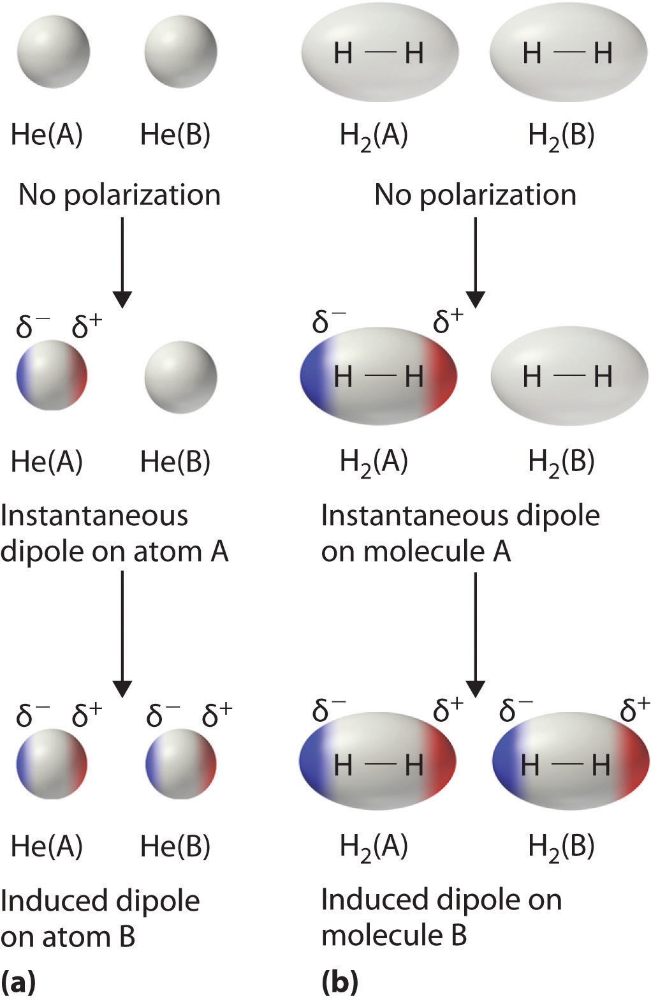The formation of an instantaneous dipole moment on one He atom (a) or an H2 molecule (b) results in the formation of an induced dipole on an adjacent atom or molecule.
Instantaneous dipole–induced dipole interactions between nonpolar molecules can produce intermolecular attractions just as they produce interatomic attractions in monatomic substances like Xe. This effect, illustrated for two H2 molecules in part (b) in Figure 11.5 "Instantaneous Dipole Moments", tends to become more pronounced as atomic and molecular masses increase (Table 11.3 "Normal Melting and Boiling Points of Some Elements and Nonpolar Compounds"). For example, Xe boils at −108.1°C, whereas He boils at −269°C. The reason for this trend is that the strength of London dispersion forces is related to the ease with which the electron distribution in a given atom can be perturbed. In small atoms such as He, the two 1s electrons are held close to the nucleus in a very small volume, and electron–electron repulsions are strong enough to prevent significant asymmetry in their distribution. In larger atoms such as Xe, however, the outer electrons are much less strongly attracted to the nucleus because of filled intervening shells. (For more information on shielding, see Chapter 7 "The Periodic Table and Periodic Trends", Section 7.2 "Sizes of Atoms and Ions".) As a result, it is relatively easy to temporarily deform the electron distribution to generate an instantaneous or induced dipole. The ease of deformation of the electron distribution in an atom or molecule is called its polarizabilityThe ease of deformation of the electron distribution in an atom or molecule.. Because the electron distribution is more easily perturbed in large, heavy species than in small, light species, we say that heavier substances tend to be much more polarizable than lighter ones.
For similar substances, London dispersion forces get stronger with increasing molecular size.
The polarizability of a substance also determines how it interacts with ions and species that possess permanent dipoles, as we shall see when we discuss solutions in Chapter 13 "Solutions". Thus London dispersion forces are responsible for the general trend toward higher boiling points with increased molecular mass and greater surface area in a homologous series of compounds, such as the alkanes (part (a) in Figure 11.6 "Mass and Surface Area Affect the Strength of London Dispersion Forces"). The strengths of London dispersion forces also depend significantly on molecular shape because shape determines how much of one molecule can interact with its neighboring molecules at any given time. For example, part (b) in Figure 11.6 "Mass and Surface Area Affect the Strength of London Dispersion Forces" shows 2,2-dimethylpropane (neopentane) and n-pentane, both of which have the empirical formula C5H12. Neopentane is almost spherical, with a small surface area for intermolecular interactions, whereas n-pentane has an extended conformation that enables it to come into close contact with other n-pentane molecules. As a result, the boiling point of neopentane (9.5°C) is more than 25°C lower than the boiling point of n-pentane (36.1°C).
Figure 11.6 Mass and Surface Area Affect the Strength of London Dispersion Forces

(a) In this series of four simple alkanes, larger molecules have stronger London forces between them than smaller molecules and consequently higher boiling points. (b) Linear n-pentane molecules have a larger surface area and stronger intermolecular forces than spherical neopentane molecules. As a result, neopentane is a gas at room temperature, whereas n-pentane is a volatile liquid.
All molecules, whether polar or nonpolar, are attracted to one another by London dispersion forces in addition to any other attractive forces that may be present. In general, however, dipole–dipole interactions in small polar molecules are significantly stronger than London dispersion forces, so the former predominate.
Arrange n-butane, propane, 2-methylpropane [isobutene, (CH3)2CHCH3], and n-pentane in order of increasing boiling points.
Given: compounds
Asked for: order of increasing boiling points
Strategy:
Determine the intermolecular forces in the compounds and then arrange the compounds according to the strength of those forces. The substance with the weakest forces will have the lowest boiling point.
Solution:
The four compounds are alkanes and nonpolar, so London dispersion forces are the only important intermolecular forces. These forces are generally stronger with increasing molecular mass, so propane should have the lowest boiling point and n-pentane should have the highest, with the two butane isomers falling in between. Of the two butane isomers, 2-methylpropane is more compact, and n-butane has the more extended shape. Consequently, we expect intermolecular interactions for n-butane to be stronger due to its larger surface area, resulting in a higher boiling point. The overall order is thus as follows, with actual boiling points in parentheses: propane (−42.1°C) < 2-methylpropane (−11.7°C) < n-butane (−0.5°C) < n-pentane (36.1°C).
Exercise
Arrange GeH4, SiCl4, SiH4, CH4, and GeCl4 in order of decreasing boiling points.
Answer: GeCl4 (87°C) > SiCl4 (57.6°C) > GeH4 (−88.5°C) > SiH4 (−111.8°C) > CH4 (−161°C)
Molecules with hydrogen atoms bonded to electronegative atoms such as O, N, and F (and to a much lesser extent Cl and S) tend to exhibit unusually strong intermolecular interactions. These result in much higher boiling points than are observed for substances in which London dispersion forces dominate, as illustrated for the covalent hydrides of elements of groups 14–17 in Figure 11.7 "The Effects of Hydrogen Bonding on Boiling Points". Methane and its heavier congeners in group 14 form a series whose boiling points increase smoothly with increasing molar mass. This is the expected trend in nonpolar molecules, for which London dispersion forces are the exclusive intermolecular forces. In contrast, the hydrides of the lightest members of groups 15–17 have boiling points that are more than 100°C greater than predicted on the basis of their molar masses. The effect is most dramatic for water: if we extend the straight line connecting the points for H2Te and H2Se to the line for period 2, we obtain an estimated boiling point of −130°C for water! Imagine the implications for life on Earth if water boiled at −130°C rather than 100°C.
Figure 11.7 The Effects of Hydrogen Bonding on Boiling Points
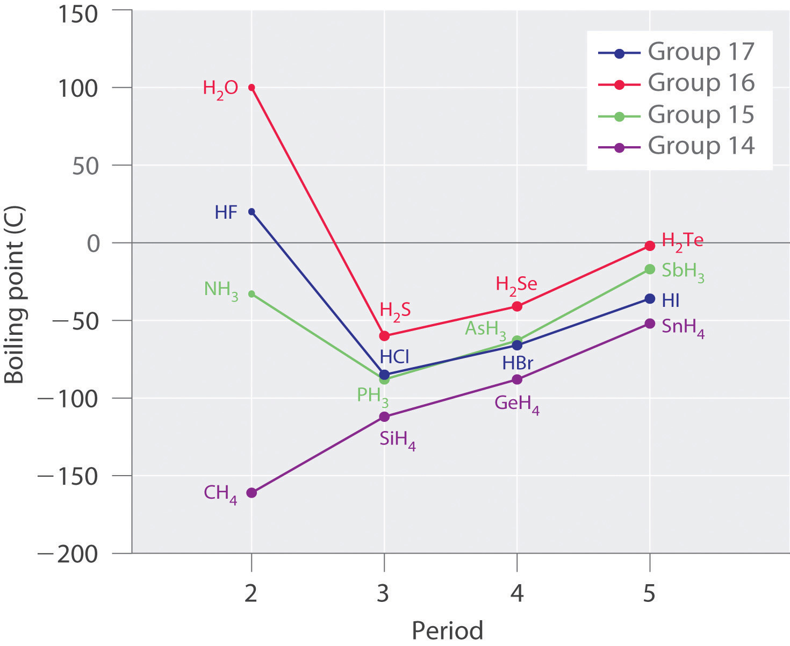These plots of the boiling points of the covalent hydrides of the elements of groups 14–17 show that the boiling points of the lightest members of each series for which hydrogen bonding is possible (HF, NH3, and H2O) are anomalously high for compounds with such low molecular masses.
Why do strong intermolecular forces produce such anomalously high boiling points and other unusual properties, such as high enthalpies of vaporization and high melting points? The answer lies in the highly polar nature of the bonds between hydrogen and very electronegative elements such as O, N, and F. The large difference in electronegativity results in a large partial positive charge on hydrogen and a correspondingly large partial negative charge on the O, N, or F atom. Consequently, H–O, H–N, and H–F bonds have very large bond dipoles that can interact strongly with one another. Because a hydrogen atom is so small, these dipoles can also approach one another more closely than most other dipoles. The combination of large bond dipoles and short dipole–dipole distances results in very strong dipole–dipole interactions called hydrogen bondsAn unusually strong dipole-dipole interaction (intermolecular force) that results when hydrogen is bonded to very electronegative elements, such as O, N, and F., as shown for ice in Figure 11.8 "The Hydrogen-Bonded Structure of Ice". A hydrogen bond is usually indicated by a dotted line between the hydrogen atom attached to O, N, or F (the hydrogen bond donor) and the atom that has the lone pair of electrons (the hydrogen bond acceptor). Because each water molecule contains two hydrogen atoms and two lone pairs, a tetrahedral arrangement maximizes the number of hydrogen bonds that can be formed. In the structure of ice, each oxygen atom is surrounded by a distorted tetrahedron of hydrogen atoms that form bridges to the oxygen atoms of adjacent water molecules. The bridging hydrogen atoms are not equidistant from the two oxygen atoms they connect, however. Instead, each hydrogen atom is 101 pm from one oxygen and 174 pm from the other. In contrast, each oxygen atom is bonded to two H atoms at the shorter distance and two at the longer distance, corresponding to two O–H covalent bonds and two hydrogen bonds from adjacent water molecules, respectively. The resulting open, cagelike structure of ice means that the solid is actually slightly less dense than the liquid, which explains why ice floats on water rather than sinks.
Figure 11.8 The Hydrogen-Bonded Structure of Ice
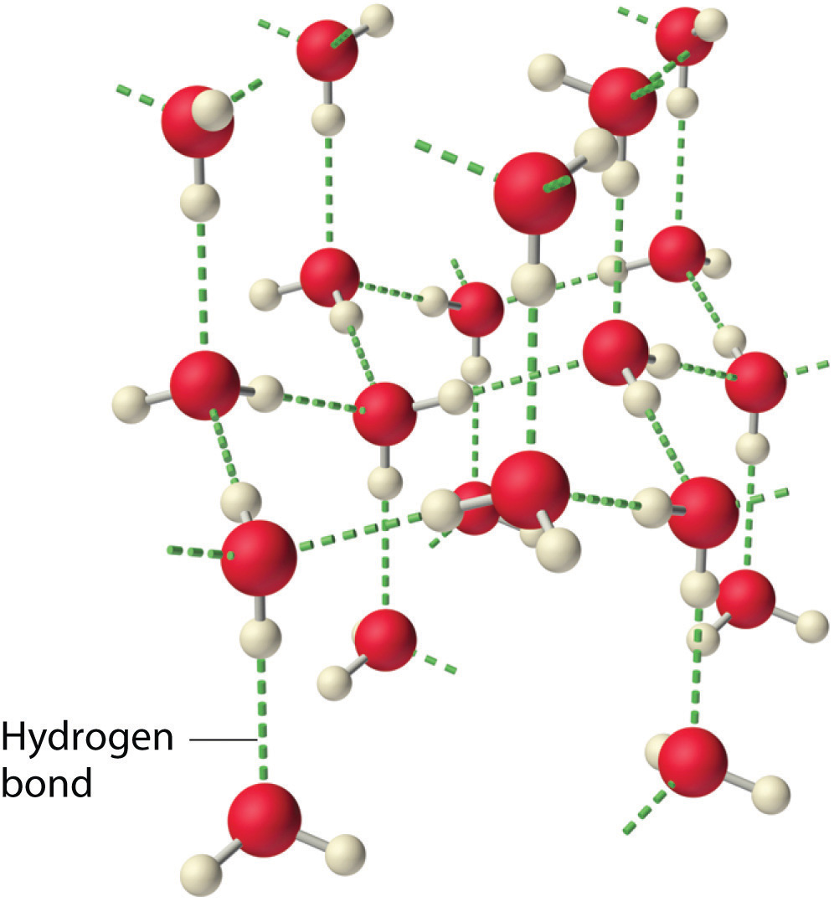Each water molecule accepts two hydrogen bonds from two other water molecules and donates two hydrogen atoms to form hydrogen bonds with two more water molecules, producing an open, cagelike structure. The structure of liquid water is very similar, but in the liquid, the hydrogen bonds are continually broken and formed because of rapid molecular motion.
Hydrogen bond formation requires both a hydrogen bond donor and a hydrogen bond acceptor.
Because ice is less dense than liquid water, rivers, lakes, and oceans freeze from the top down. In fact, the ice forms a protective surface layer that insulates the rest of the water, allowing fish and other organisms to survive in the lower levels of a frozen lake or sea. If ice were denser than the liquid, the ice formed at the surface in cold weather would sink as fast as it formed. Bodies of water would freeze from the bottom up, which would be lethal for most aquatic creatures. The expansion of water when freezing also explains why automobile or boat engines must be protected by “antifreeze” (we will discuss how antifreeze works in Chapter 13 "Solutions") and why unprotected pipes in houses break if they are allowed to freeze.
Although hydrogen bonds are significantly weaker than covalent bonds, with typical dissociation energies of only 15–25 kJ/mol, they have a significant influence on the physical properties of a compound. Compounds such as HF can form only two hydrogen bonds at a time as can, on average, pure liquid NH3. Consequently, even though their molecular masses are similar to that of water, their boiling points are significantly lower than the boiling point of water, which forms four hydrogen bonds at a time.
Considering CH3OH, C2H6, Xe, and (CH3)3N, which can form hydrogen bonds with themselves? Draw the hydrogen-bonded structures.
Given: compounds
Asked for: formation of hydrogen bonds and structure
Strategy:
A Identify the compounds with a hydrogen atom attached to O, N, or F. These are likely to be able to act as hydrogen bond donors.
B Of the compounds that can act as hydrogen bond donors, identify those that also contain lone pairs of electrons, which allow them to be hydrogen bond acceptors. If a substance is both a hydrogen donor and a hydrogen bond acceptor, draw a structure showing the hydrogen bonding.
Solution:
A Of the species listed, xenon (Xe), ethane (C2H6), and trimethylamine [(CH3)3N] do not contain a hydrogen atom attached to O, N, or F; hence they cannot act as hydrogen bond donors.
B The one compound that can act as a hydrogen bond donor, methanol (CH3OH), contains both a hydrogen atom attached to O (making it a hydrogen bond donor) and two lone pairs of electrons on O (making it a hydrogen bond acceptor); methanol can thus form hydrogen bonds by acting as either a hydrogen bond donor or a hydrogen bond acceptor. The hydrogen-bonded structure of methanol is as follows:
Exercise
Considering CH3CO2H, (CH3)3N, NH3, and CH3F, which can form hydrogen bonds with themselves? Draw the hydrogen-bonded structures.
Answer: CH3CO2H and NH3;
Arrange C60 (buckminsterfullerene, which has a cage structure), NaCl, He, Ar, and N2O in order of increasing boiling points.
Given: compounds
Asked for: order of increasing boiling points
Strategy:
Identify the intermolecular forces in each compound and then arrange the compounds according to the strength of those forces. The substance with the weakest forces will have the lowest boiling point.
Solution:
Electrostatic interactions are strongest for an ionic compound, so we expect NaCl to have the highest boiling point. To predict the relative boiling points of the other compounds, we must consider their polarity (for dipole–dipole interactions), their ability to form hydrogen bonds, and their molar mass (for London dispersion forces). Helium is nonpolar and by far the lightest, so it should have the lowest boiling point. Argon and N2O have very similar molar masses (40 and 44 g/mol, respectively), but N2O is polar while Ar is not. Consequently, N2O should have a higher boiling point. A C60 molecule is nonpolar, but its molar mass is 720 g/mol, much greater than that of Ar or N2O. Because the boiling points of nonpolar substances increase rapidly with molecular mass, C60 should boil at a higher temperature than the other nonionic substances. The predicted order is thus as follows, with actual boiling points in parentheses: He (−269°C) < Ar (−185.7°C) < N2O (−88.5°C) < C60 (>280°C) < NaCl (1465°C).
Exercise
Arrange 2,4-dimethylheptane, Ne, CS2, Cl2, and KBr in order of decreasing boiling points.
Answer: KBr (1435°C) > 2,4-dimethylheptane (132.9°C) > CS2 (46.6°C) > Cl2 (−34.6°C) > Ne (−246°C)
Molecules in liquids are held to other molecules by intermolecular interactions, which are weaker than the intramolecular interactions that hold the atoms together within molecules and polyatomic ions. Transitions between the solid and liquid or the liquid and gas phases are due to changes in intermolecular interactions but do not affect intramolecular interactions. The three major types of intermolecular interactions are dipole–dipole interactions, London dispersion forces (these two are often referred to collectively as van der Waals forces), and hydrogen bonds. Dipole–dipole interactions arise from the electrostatic interactions of the positive and negative ends of molecules with permanent dipole moments; their strength is proportional to the magnitude of the dipole moment and to 1/r6, where r is the distance between dipoles. London dispersion forces are due to the formation of instantaneous dipole moments in polar or nonpolar molecules as a result of short-lived fluctuations of electron charge distribution, which in turn cause the temporary formation of an induced dipole in adjacent molecules. Like dipole–dipole interactions, their energy falls off as 1/r6. Larger atoms tend to be more polarizable than smaller ones because their outer electrons are less tightly bound and are therefore more easily perturbed. Hydrogen bonds are especially strong dipole–dipole interactions between molecules that have hydrogen bonded to a highly electronegative atom, such as O, N, or F. The resulting partially positively charged H atom on one molecule (the hydrogen bond donor) can interact strongly with a lone pair of electrons of a partially negatively charged O, N, or F atom on adjacent molecules (the hydrogen bond acceptor). Because of strong hydrogen bonding between water molecules, water has an unusually high boiling point, and ice has an open, cagelike structure that is less dense than liquid water.
What is the main difference between intramolecular interactions and intermolecular interactions? Which is typically stronger? How are changes of state affected by these different kinds of interactions?
Describe the three major kinds of intermolecular interactions discussed in this chapter and their major features. The hydrogen bond is actually an example of one of the other two types of interaction. Identify the kind of interaction that includes hydrogen bonds and explain why hydrogen bonds fall into this category.
Which are stronger—dipole–dipole interactions or London dispersion forces? Which are likely to be more important in a molecule with heavy atoms? Explain your answers.
Explain why hydrogen bonds are unusually strong compared to other dipole–dipole interactions. How does the strength of hydrogen bonds compare with the strength of covalent bonds?
Liquid water is essential for life as we know it, but based on its molecular mass, water should be a gas under standard conditions. Why is water a liquid rather than a gas under standard conditions?
Describe the effect of polarity, molecular mass, and hydrogen bonding on the melting point and boiling point of a substance.
Why are intermolecular interactions more important for liquids and solids than for gases? Under what conditions must these interactions be considered for gases?
Using acetic acid as an example, illustrate both attractive and repulsive intermolecular interactions. How does the boiling point of a substance depend on the magnitude of the repulsive intermolecular interactions?
In group 17, elemental fluorine and chlorine are gases, whereas bromine is a liquid and iodine is a solid. Why?
The boiling points of the anhydrous hydrogen halides are as follows: HF, 19°C; HCl, −85°C; HBr, −67°C; and HI, −34°C. Explain any trends in the data, as well as any deviations from that trend.
Identify the most important intermolecular interaction in each of the following.
Identify the most important intermolecular interaction in each of the following.
Would you expect London dispersion forces to be more important for Xe or Ne? Why? (The atomic radius of Ne is 38 pm, whereas that of Xe is 108 pm.)
Arrange Kr, Cl2, H2, N2, Ne, and O2 in order of increasing polarizability. Explain your reasoning.
Both water and methanol have anomalously high boiling points due to hydrogen bonding, but the boiling point of water is greater than that of methanol despite its lower molecular mass. Why? Draw the structures of these two compounds, including any lone pairs, and indicate potential hydrogen bonds.
The structures of ethanol, ethylene glycol, and glycerin are as follows:
Arrange these compounds in order of increasing boiling point. Explain your rationale.
Do you expect the boiling point of H2S to be higher or lower than that of H2O? Justify your answer.
Ammonia (NH3), methylamine (CH3NH2), and ethylamine (CH3CH2NH2) are gases at room temperature, while propylamine (CH3CH2CH2NH2) is a liquid at room temperature. Explain these observations.
Why is it not advisable to freeze a sealed glass bottle that is completely filled with water? Use both macroscopic and microscopic models to explain your answer. Is a similar consideration required for a bottle containing pure ethanol? Why or why not?
Which compound in the following pairs will have the higher boiling point? Explain your reasoning.
Some recipes call for vigorous boiling, while others call for gentle simmering. What is the difference in the temperature of the cooking liquid between boiling and simmering? What is the difference in energy input?
Use the melting of a metal such as lead to explain the process of melting in terms of what is happening at the molecular level. As a piece of lead melts, the temperature of the metal remains constant, even though energy is being added continuously. Why?
How does the O–H distance in a hydrogen bond in liquid water compare with the O–H distance in the covalent O–H bond in the H2O molecule? What effect does this have on the structure and density of ice?
Water is a liquid under standard conditions because of its unique ability to form four strong hydrogen bonds per molecule.
As the atomic mass of the halogens increases, so does the number of electrons and the average distance of those electrons from the nucleus. Larger atoms with more electrons are more easily polarized than smaller atoms, and the increase in polarizability with atomic number increases the strength of London dispersion forces. These intermolecular interactions are strong enough to favor the condensed states for bromine and iodine under normal conditions of temperature and pressure.
Water has two polar O–H bonds with H atoms that can act as hydrogen bond donors, plus two lone pairs of electrons that can act as hydrogen bond acceptors, giving a net of four hydrogen bonds per H2O molecule. Although methanol also has two lone pairs of electrons on oxygen that can act as hydrogen bond acceptors, it only has one O–H bond with an H atom that can act as a hydrogen bond donor. Consequently, methanol can only form two hydrogen bonds per molecule on average, versus four for water. Hydrogen bonding therefore has a much greater effect on the boiling point of water.
Vigorous boiling causes more water molecule to escape into the vapor phase, but does not affect the temperature of the liquid. Vigorous boiling requires a higher energy input than does gentle simmering.
Although you have been introduced to some of the interactions that hold molecules together in a liquid, we have not yet discussed the consequences of those interactions for the bulk properties of liquids. We now turn our attention to three unique properties of liquids that intimately depend on the nature of intermolecular interactions: surface tension, capillary action, and viscosity.
We stated in Section 11.1 "The Kinetic Molecular Description of Liquids" that liquids tend to adopt the shapes of their containers. Why, then, do small amounts of water on a freshly waxed car form raised droplets instead of a thin, continuous film? The answer lies in a property called surface tension, which depends on intermolecular forces.
Figure 11.9 "A Representation of Surface Tension in a Liquid" presents a microscopic view of a liquid droplet. A typical molecule in the interior of the droplet is surrounded by other molecules that exert attractive forces from all directions. Consequently, there is no net force on the molecule that would cause it to move in a particular direction. In contrast, a molecule on the surface experiences a net attraction toward the drop because there are no molecules on the outside to balance the forces exerted by adjacent molecules in the interior. Because a sphere has the smallest possible surface area for a given volume, intermolecular attractive interactions between water molecules cause the droplet to adopt a spherical shape. This maximizes the number of attractive interactions and minimizes the number of water molecules at the surface. Hence raindrops are almost spherical, and drops of water on a waxed (nonpolar) surface, which does not interact strongly with water, form round beads (see the chapter opener photo). A dirty car is covered with a mixture of substances, some of which are polar. Attractive interactions between the polar substances and water cause the water to spread out into a thin film instead of forming beads.
Figure 11.9 A Representation of Surface Tension in a Liquid
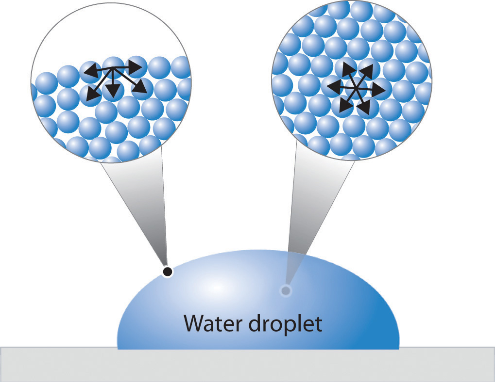Molecules at the surface of water experience a net attraction to other molecules in the liquid, which holds the surface of the bulk sample together. In contrast, those in the interior experience uniform attractive forces..
The same phenomenon holds molecules together at the surface of a bulk sample of water, almost as if they formed a skin. When filling a glass with water, the glass can be overfilled so that the level of the liquid actually extends above the rim. Similarly, a sewing needle or a paper clip can be placed on the surface of a glass of water where it “floats,” even though steel is much denser than water (part (a) in Figure 11.10 "The Effects of the High Surface Tension of Liquid Water"). Many insects take advantage of this property to walk on the surface of puddles or ponds without sinking (part (b) in Figure 11.10 "The Effects of the High Surface Tension of Liquid Water").
Figure 11.10 The Effects of the High Surface Tension of Liquid Water

(a) A paper clip can “float” on water because of surface tension. (b) Surface tension also allows insects such as this water strider to “walk on water.”
Such phenomena are manifestations of surface tensionThe energy required to increase the surface area of a liquid by a certain amount. Surface tension is measured in units of energy per area (e.g., )., which is defined as the energy required to increase the surface area of a liquid by a specific amount. Surface tension is therefore measured as energy per unit area, such as joules per square meter (J/m2) or dyne per centimeter (dyn/cm), where 1 dyn = 1 × 10−5 N. The values of the surface tension of some representative liquids are listed in Table 11.4 "Surface Tension, Viscosity, Vapor Pressure (at 25°C Unless Otherwise Indicated), and Normal Boiling Points of Common Liquids". Note the correlation between the surface tension of a liquid and the strength of the intermolecular forces: the stronger the intermolecular forces, the higher the surface tension. For example, water, with its strong intermolecular hydrogen bonding, has one of the highest surface tension values of any liquid, whereas low-boiling-point organic molecules, which have relatively weak intermolecular forces, have much lower surface tensions. Mercury is an apparent anomaly, but its very high surface tension is due to the presence of strong metallic bonding, which we will discuss in more detail in Chapter 12 "Solids".
Table 11.4 Surface Tension, Viscosity, Vapor Pressure (at 25°C Unless Otherwise Indicated), and Normal Boiling Points of Common Liquids
| Substance | Surface Tension (× 10−3 J/m2) | Viscosity (mPa·s) | Vapor Pressure (mmHg) | Normal Boiling Point (°C) |
|---|---|---|---|---|
| Organic Compounds | ||||
| diethyl ether | 17 | 0.22 | 531 | 34.6 |
| n-hexane | 18 | 0.30 | 149 | 68.7 |
| acetone | 23 | 0.31 | 227 | 56.5 |
| ethanol | 22 | 1.07 | 59 | 78.3 |
| ethylene glycol | 48 | 16.1 | ~0.08 | 198.9 |
| Liquid Elements | ||||
| bromine | 41 | 0.94 | 218 | 58.8 |
| mercury | 486 | 1.53 | 0.0020 | 357 |
| Water | ||||
| 0°C | 75.6 | 1.79 | 4.6 | — |
| 20°C | 72.8 | 1.00 | 17.5 | — |
| 60°C | 66.2 | 0.47 | 149 | — |
| 100°C | 58.9 | 0.28 | 760 | — |
Adding soaps and detergents that disrupt the intermolecular attractions between adjacent water molecules can reduce the surface tension of water. Because they affect the surface properties of a liquid, soaps and detergents are called surface-active agents, or surfactantsSubstances (surface-active agents), such as soaps and detergents, that disrupt the attractive intermolecular interactions between molecules of a polar liquid, thereby reducing the surface tension of the liquid.. In the 1960s, US Navy researchers developed a method of fighting fires aboard aircraft carriers using “foams,” which are aqueous solutions of fluorinated surfactants. The surfactants reduce the surface tension of water below that of fuel, so the fluorinated solution is able to spread across the burning surface and extinguish the fire. Such foams are now used universally to fight large-scale fires of organic liquids.
Intermolecular forces also cause a phenomenon called capillary actionThe tendency of a polar liquid to rise against gravity into a small-diameter glass tube., which is the tendency of a polar liquid to rise against gravity into a small-diameter tube (a capillary), as shown in Figure 11.11 "The Phenomenon of Capillary Action". When a glass capillary is put into a dish of water, water is drawn up into the tube. The height to which the water rises depends on the diameter of the tube and the temperature of the water but not on the angle at which the tube enters the water. The smaller the diameter, the higher the liquid rises.
Figure 11.11 The Phenomenon of Capillary Action

When a glass capillary is placed in liquid water, water rises up into the capillary. The smaller the diameter of the capillary, the higher the water rises. The height of the water does not depend on the angle at which the capillary is tilted.
Capillary action is the net result of two opposing sets of forces: cohesive forcesThe intermolecular forces that hold a liquid together., which are the intermolecular forces that hold a liquid together, and adhesive forcesThe attractive intermolecular forces between a liquid and the substance comprising the surface of a capillary., which are the attractive forces between a liquid and the substance that composes the capillary. Water has both strong adhesion to glass, which contains polar SiOH groups, and strong intermolecular cohesion. When a glass capillary is put into water, the surface tension due to cohesive forces constricts the surface area of water within the tube, while adhesion between the water and the glass creates an upward force that maximizes the amount of glass surface in contact with the water. If the adhesive forces are stronger than the cohesive forces, as is the case for water, then the liquid in the capillary rises to the level where the downward force of gravity exactly balances this upward force. If, however, the cohesive forces are stronger than the adhesive forces, as is the case for mercury and glass, the liquid pulls itself down into the capillary below the surface of the bulk liquid to minimize contact with the glass (part (a) in Figure 11.12 "The Effects of Capillary Action"). The upper surface of a liquid in a tube is called the meniscusThe upper surface of the liquid in a tube., and the shape of the meniscus depends on the relative strengths of the cohesive and adhesive forces. In liquids such as water, the meniscus is concave; in liquids such as mercury, however, which have very strong cohesive forces and weak adhesion to glass, the meniscus is convex (part (b) in Figure 11.12 "The Effects of Capillary Action").
Polar substances are drawn up a glass capillary and generally have a concave meniscus.
Figure 11.12 The Effects of Capillary Action

(a) This drawing illustrates the shape of the meniscus and the relative height of a mercury column when a glass capillary is put into liquid mercury. The meniscus is convex and the surface of the liquid inside the tube is lower than the level of the liquid outside the tube. (b) Because water adheres strongly to the polar surface of glass, it has a concave meniscus, whereas mercury, which does not adhere to the glass, has a convex meniscus.
Fluids and nutrients are transported up the stems of plants or the trunks of trees by capillary action. Plants contain tiny rigid tubes composed of cellulose, to which water has strong adhesion. Because of the strong adhesive forces, nutrients can be transported from the roots to the tops of trees that are more than 50 m tall. Cotton towels are also made of cellulose; they absorb water because the tiny tubes act like capillaries and “wick” the water away from your skin. The moisture is absorbed by the entire fabric, not just the layer in contact with your body.
Viscosity (η)The resistance of a liquid to flow. is the resistance of a liquid to flow. Some liquids, such as gasoline, ethanol, and water, flow very readily and hence have a low viscosity. Others, such as motor oil, molasses, and maple syrup, flow very slowly and have a high viscosity. The two most common methods for evaluating the viscosity of a liquid are (1) to measure the time it takes for a quantity of liquid to flow through a narrow vertical tube and (2) to measure the time it takes steel balls to fall through a given volume of the liquid. The higher the viscosity, the slower the liquid flows through the tube and the steel balls fall. Viscosity is expressed in units of the poise (mPa·s); the higher the number, the higher the viscosity. The viscosities of some representative liquids are listed in Table 11.4 "Surface Tension, Viscosity, Vapor Pressure (at 25°C Unless Otherwise Indicated), and Normal Boiling Points of Common Liquids" and show a correlation between viscosity and intermolecular forces. Because a liquid can flow only if the molecules can move past one another with minimal resistance, strong intermolecular attractive forces make it more difficult for molecules to move with respect to one another. The addition of a second hydroxyl group to ethanol, for example, which produces ethylene glycol (HOCH2CH2OH), increases the viscosity 15-fold. This effect is due to the increased number of hydrogen bonds that can form between hydroxyl groups in adjacent molecules, resulting in dramatically stronger intermolecular attractive forces.
There is also a correlation between viscosity and molecular shape. Liquids consisting of long, flexible molecules tend to have higher viscosities than those composed of more spherical or shorter-chain molecules. The longer the molecules, the easier it is for them to become “tangled” with one another, making it more difficult for them to move past one another. London dispersion forces also increase with chain length. Due to a combination of these two effects, long-chain hydrocarbons (such as motor oils) are highly viscous.
Viscosity increases as intermolecular interactions or molecular size increases.
Motor oils and other lubricants demonstrate the practical importance of controlling viscosity. The oil in an automobile engine must effectively lubricate under a wide range of conditions, from subzero starting temperatures to the 200°C that oil can reach in an engine in the heat of the Mojave Desert in August. Viscosity decreases rapidly with increasing temperatures because the kinetic energy of the molecules increases, and higher kinetic energy enables the molecules to overcome the attractive forces that prevent the liquid from flowing. As a result, an oil that is thin enough to be a good lubricant in a cold engine will become too “thin” (have too low a viscosity) to be effective at high temperatures. The viscosity of motor oils is described by an SAE (Society of Automotive Engineers) rating ranging from SAE 5 to SAE 50 for engine oils: the lower the number, the lower the viscosity. So-called single-grade oils can cause major problems. If they are viscous enough to work at high operating temperatures (SAE 50, for example), then at low temperatures, they can be so viscous that a car is difficult to start or an engine is not properly lubricated. Consequently, most modern oils are multigrade, with designations such as SAE 20W/50 (a grade used in high-performance sports cars), in which case the oil has the viscosity of an SAE 20 oil at subzero temperatures (hence the W for winter) and the viscosity of an SAE 50 oil at high temperatures. These properties are achieved by a careful blend of additives that modulate the intermolecular interactions in the oil, thereby controlling the temperature dependence of the viscosity. Many of the commercially available oil additives “for improved engine performance” are highly viscous materials that increase the viscosity and effective SAE rating of the oil, but overusing these additives can cause the same problems experienced with highly viscous single-grade oils.
Based on the nature and strength of the intermolecular cohesive forces and the probable nature of the liquid–glass adhesive forces, predict what will happen when a glass capillary is put into a beaker of SAE 20 motor oil. Will the oil be pulled up into the tube by capillary action or pushed down below the surface of the liquid in the beaker? What will be the shape of the meniscus (convex or concave)? (Hint: the surface of glass is lined with Si–OH groups.)
Given: substance and composition of the glass surface
Asked for: behavior of oil and the shape of meniscus
Strategy:
A Identify the cohesive forces in the motor oil.
B Determine whether the forces interact with the surface of glass. From the strength of this interaction, predict the behavior of the oil and the shape of the meniscus.
Solution:
A Motor oil is a nonpolar liquid consisting largely of hydrocarbon chains. The cohesive forces responsible for its high boiling point are almost solely London dispersion forces between the hydrocarbon chains. B Such a liquid cannot form strong interactions with the polar Si–OH groups of glass, so the surface of the oil inside the capillary will be lower than the level of the liquid in the beaker. The oil will have a convex meniscus similar to that of mercury.
Exercise
Predict what will happen when a glass capillary is put into a beaker of ethylene glycol. Will the ethylene glycol be pulled up into the tube by capillary action or pushed down below the surface of the liquid in the beaker? What will be the shape of the meniscus (convex or concave)?
Answer: Capillary action will pull the ethylene glycol up into the capillary. The meniscus will be concave.
Surface tension is the energy required to increase the surface area of a liquid by a given amount. The stronger the intermolecular interactions, the greater the surface tension. Surfactants are molecules, such as soaps and detergents, that reduce the surface tension of polar liquids like water. Capillary action is the phenomenon in which liquids rise up into a narrow tube called a capillary. It results when cohesive forces, the intermolecular forces in the liquid, are weaker than adhesive forces, the attraction between a liquid and the surface of the capillary. The shape of the meniscus, the upper surface of a liquid in a tube, also reflects the balance between adhesive and cohesive forces. The viscosity of a liquid is its resistance to flow. Liquids that have strong intermolecular forces tend to have high viscosities.
Why is a water droplet round?
How is the environment of molecules on the surface of a liquid droplet different from that of molecules in the interior of the droplet? How is this difference related to the concept of surface tension?
Explain the role of intermolecular and intramolecular forces in surface tension.
A mosquito is able to walk across water without sinking, but if a few drops of detergent are added to the water, the insect will sink. Why?
Explain how soaps or surfactants decrease the surface tension of a liquid. How does the meniscus of an aqueous solution in a capillary change if a surfactant is added? Illustrate your answer with a diagram.
Of CH2Cl2, hexane, and ethanol, which has the lowest viscosity? Which has the highest surface tension? Explain your reasoning in each case.
At 25°C, cyclohexanol has a surface tension of 32.92 mN/m2, whereas the surface tension of cyclohexanone, which is very similar chemically, is only 25.45 mN/m2. Why is the surface tension of cyclohexanone so much less than that of cyclohexanol?
What is the relationship between
Explain your answers in terms of a microscopic picture.
What two opposing forces are responsible for capillary action? How do these forces determine the shape of the meniscus?
Which of the following liquids will have a concave meniscus in a glass capillary? Explain your reasoning.
How does viscosity depend on molecular shape? What molecular features make liquids highly viscous?
Adding a soap or a surfactant to water disrupts the attractive intermolecular interactions between water molecules, thereby decreasing the surface tension. Because water is a polar molecule, one would expect that a soap or a surfactant would also disrupt the attractive interactions responsible for adhesion of water to the surface of a glass capillary. As shown in the sketch, this would decrease the height of the water column inside the capillary, as well as making the meniscus less concave.
As the structures indicate, cyclohexanol is a polar substance that can engage in hydrogen bonding, much like methanol or ethanol; consequently, it is expected to have a higher surface tension due to stronger intermolecular interactions.
Cohesive forces are the intermolecular forces that hold the molecules of the liquid together, while adhesive forces are the attractive forces between the molecules of the liquid and the walls of the capillary. If the adhesive forces are stronger than the cohesive forces, the liquid is pulled up into the capillary and the meniscus is concave. Conversely, if the cohesive forces are stronger than the adhesive forces, the level of the liquid inside the capillary will be lower than the level outside the capillary, and the meniscus will be convex.
Viscous substances often consist of molecules that are much longer than they are wide and whose structures are often rather flexible. As a result, the molecules tend to become tangled with one another (much like overcooked spaghetti), which decreases the rate at which they can move through the liquid.
The viscosities of five liquids at 25°C are given in the following table. Explain the observed trends in viscosity.
| Compound | Molecular Formula | Viscosity (mPa·s) |
|---|---|---|
| benzene | C6H6 | 0.604 |
| aniline | C6H5NH2 | 3.847 |
| 1,2-dichloroethane | C2H4Cl2 | 0.779 |
| heptane | C7H16 | 0.357 |
| 1-heptanol | C7H15OH | 5.810 |
The following table gives values for the viscosity, boiling point, and surface tension of four substances. Examine these data carefully to see whether the data for each compound are internally consistent and point out any obvious errors or inconsistencies. Explain your reasoning.
| Compound | Viscosity (mPa·s at 20°C) | Boiling Point (°C) | Surface Tension (dyn/cm at 25°C) |
|---|---|---|---|
| A | 0.41 | 61 | 27.16 |
| B | 0.55 | 65 | 22.55 |
| C | 0.92 | 105 | 36.76 |
| D | 0.59 | 110 | 28.53 |
Surface tension data (in dyn/cm) for propanoic acid (C3H6O2), and 2-propanol (C3H8O), as a function of temperature, are given in the following table. Plot the data for each compound and explain the differences between the two graphs. Based on these data, which molecule is more polar?
| Compound | 25°C | 50°C | 75°C |
|---|---|---|---|
| propanoic acid | 26.20 | 23.72 | 21.23 |
| 2-propanol | 20.93 | 18.96 | 16.98 |
The plots of surface tension versus temperature for propionic acid and isopropanol have essentially the same slope, but at all temperatures the surface tension of propionic acid is about 30% greater than for isopropanol. Because surface tension is a measure of the cohesive forces in a liquid, these data suggest that the cohesive forces for propionic acid are significantly greater than for isopropanol. Both substances consist of polar molecules with similar molecular masses, and the most important intermolecular interactions are likely to be dipole–dipole interactions. Consequently, these data suggest that propionic acid is more polar than isopropanol.
Nearly all of us have heated a pan of water with the lid in place and shortly thereafter heard the sounds of the lid rattling and hot water spilling onto the stovetop. When a liquid is heated, its molecules obtain sufficient kinetic energy to overcome the forces holding them in the liquid and they escape into the gaseous phase. By doing so, they generate a population of molecules in the vapor phase above the liquid that produces a pressure—the vapor pressureThe pressure created over a liquid by the molecules of a liquid substance that have enough kinetic energy to escape to the vapor phase. of the liquid. In the situation we described, enough pressure was generated to move the lid, which allowed the vapor to escape. If the vapor is contained in a sealed vessel, however, such as an unvented flask, and the vapor pressure becomes too high, the flask will explode (as many students have unfortunately discovered). In this section, we describe vapor pressure in more detail and explain how to quantitatively determine the vapor pressure of a liquid.
Because the molecules of a liquid are in constant motion, we can plot the fraction of molecules with a given kinetic energy (KE) against their kinetic energy to obtain the kinetic energy distribution of the molecules in the liquid (Figure 11.13 "The Distribution of the Kinetic Energies of the Molecules of a Liquid at Two Temperatures"), just as we did for a gas (Figure 10.19 "The Wide Variation in Molecular Speeds Observed at 298 K for Gases with Different Molar Masses"). As for gases, increasing the temperature increases both the average kinetic energy of the particles in a liquid and the range of kinetic energy of the individual molecules. If we assume that a minimum amount of energy (E0) is needed to overcome the intermolecular attractive forces that hold a liquid together, then some fraction of molecules in the liquid always has a kinetic energy greater than E0. The fraction of molecules with a kinetic energy greater than this minimum value increases with increasing temperature. Any molecule with a kinetic energy greater than E0 has enough energy to overcome the forces holding it in the liquid and escape into the vapor phase. Before it can do so, however, a molecule must also be at the surface of the liquid, where it is physically possible for it to leave the liquid surface; that is, only molecules at the surface can undergo evaporation (or vaporization)The physical process by which atoms or molecules in the liquid phase enter the gas or vapor phase., where molecules gain sufficient energy to enter a gaseous state above a liquid’s surface, thereby creating a vapor pressure.
Figure 11.13 The Distribution of the Kinetic Energies of the Molecules of a Liquid at Two Temperatures

Just as with gases, increasing the temperature shifts the peak to a higher energy and broadens the curve. Only molecules with a kinetic energy greater than E0 can escape from the liquid to enter the vapor phase, and the proportion of molecules with KE > E0 is greater at the higher temperature.
To understand the causes of vapor pressure, consider the apparatus shown in Figure 11.14 "Vapor Pressure". When a liquid is introduced into an evacuated chamber (part (a) in Figure 11.14 "Vapor Pressure"), the initial pressure above the liquid is approximately zero because there are as yet no molecules in the vapor phase. Some molecules at the surface, however, will have sufficient kinetic energy to escape from the liquid and form a vapor, thus increasing the pressure inside the container. As long as the temperature of the liquid is held constant, the fraction of molecules with KE > E0 will not change, and the rate at which molecules escape from the liquid into the vapor phase will depend only on the surface area of the liquid phase.
Figure 11.14 Vapor Pressure

(a) When a liquid is introduced into an evacuated chamber, molecules with sufficient kinetic energy escape from the surface and enter the vapor phase, causing the pressure in the chamber to increase. (b) When sufficient molecules are in the vapor phase for a given temperature, the rate of condensation equals the rate of evaporation (a steady state is reached), and the pressure in the container becomes constant.
As soon as some vapor has formed, a fraction of the molecules in the vapor phase will collide with the surface of the liquid and reenter the liquid phase in a process known as condensationThe physical process by which atoms or molecules in the vapor phase enter the liquid phase. (part (b) in Figure 11.14 "Vapor Pressure"). As the number of molecules in the vapor phase increases, the number of collisions between vapor-phase molecules and the surface will also increase. Eventually, a steady state will be reached in which exactly as many molecules per unit time leave the surface of the liquid (vaporize) as collide with it (condense). At this point, the pressure over the liquid stops increasing and remains constant at a particular value that is characteristic of the liquid at a given temperature. The rates of evaporation and condensation over time for a system such as this are shown graphically in Figure 11.15 "The Relative Rates of Evaporation and Condensation as a Function of Time after a Liquid Is Introduced into a Sealed Chamber".
Figure 11.15 The Relative Rates of Evaporation and Condensation as a Function of Time after a Liquid Is Introduced into a Sealed Chamber

The rate of evaporation depends only on the surface area of the liquid and is essentially constant. The rate of condensation depends on the number of molecules in the vapor phase and increases steadily until it equals the rate of evaporation.
Two opposing processes (such as evaporation and condensation) that occur at the same rate and thus produce no net change in a system, constitute a dynamic equilibriumA state in which two opposing processes occur at the same rate, thus producing no net change in the system.. In the case of a liquid enclosed in a chamber, the molecules continuously evaporate and condense, but the amounts of liquid and vapor do not change with time. The pressure exerted by a vapor in dynamic equilibrium with a liquid is the equilibrium vapor pressureThe pressure exerted by a vapor in dynamic equilibrium with its liquid. of the liquid.
If a liquid is in an open container, however, most of the molecules that escape into the vapor phase will not collide with the surface of the liquid and return to the liquid phase. Instead, they will diffuse through the gas phase away from the container, and an equilibrium will never be established. Under these conditions, the liquid will continue to evaporate until it has “disappeared.” The speed with which this occurs depends on the vapor pressure of the liquid and the temperature. Volatile liquidsA liquid with a relatively high vapor pressure. have relatively high vapor pressures and tend to evaporate readily; nonvolatile liquidsA liquid with a relatively low vapor pressure. have low vapor pressures and evaporate more slowly. Although the dividing line between volatile and nonvolatile liquids is not clear-cut, as a general guideline, we can say that substances with vapor pressures greater than that of water (Table 11.4 "Surface Tension, Viscosity, Vapor Pressure (at 25°C Unless Otherwise Indicated), and Normal Boiling Points of Common Liquids") are relatively volatile, whereas those with vapor pressures less than that of water are relatively nonvolatile. Thus diethyl ether (ethyl ether), acetone, and gasoline are volatile, but mercury, ethylene glycol, and motor oil are nonvolatile.
The equilibrium vapor pressure of a substance at a particular temperature is a characteristic of the material, like its molecular mass, melting point, and boiling point (Table 11.4 "Surface Tension, Viscosity, Vapor Pressure (at 25°C Unless Otherwise Indicated), and Normal Boiling Points of Common Liquids"). It does not depend on the amount of liquid as long as at least a tiny amount of liquid is present in equilibrium with the vapor. The equilibrium vapor pressure does, however, depend very strongly on the temperature and the intermolecular forces present, as shown for several substances in Figure 11.16 "The Vapor Pressures of Several Liquids as a Function of Temperature". Molecules that can hydrogen bond, such as ethylene glycol, have a much lower equilibrium vapor pressure than those that cannot, such as octane. The nonlinear increase in vapor pressure with increasing temperature is much steeper than the increase in pressure expected for an ideal gas over the corresponding temperature range. The temperature dependence is so strong because the vapor pressure depends on the fraction of molecules that have a kinetic energy greater than that needed to escape from the liquid, and this fraction increases exponentially with temperature. As a result, sealed containers of volatile liquids are potential bombs if subjected to large increases in temperature. The gas tanks on automobiles are vented, for example, so that a car won’t explode when parked in the sun. Similarly, the small cans (1–5 gallons) used to transport gasoline are required by law to have a pop-off pressure release.
Figure 11.16 The Vapor Pressures of Several Liquids as a Function of Temperature

The point at which the vapor pressure curve crosses the P = 1 atm line (dashed) is the normal boiling point of the liquid.
Volatile substances have low boiling points and relatively weak intermolecular interactions; nonvolatile substances have high boiling points and relatively strong intermolecular interactions.
The exponential rise in vapor pressure with increasing temperature in Figure 11.16 "The Vapor Pressures of Several Liquids as a Function of Temperature" allows us to use natural logarithms to express the nonlinear relationship as a linear one.For a review of natural logarithms, refer to Essential Skills 6 in Section 11.9 "Essential Skills 6".
Equation 11.1
where ln P is the natural logarithm of the vapor pressure, ΔHvap is the enthalpy of vaporization, R is the universal gas constant [8.314 J/(mol·K)], T is the temperature in kelvins, and C is the y-intercept, which is a constant for any given line. A plot of ln P versus the inverse of the absolute temperature (1/T) is a straight line with a slope of −ΔHvap/R. Equation 11.1, called the Clausius–Clapeyron equationA linear relationship that expresses the nonlinear relationship between the vapor pressure of a liquid and temperature: ln where is pressure, is the heat of vaporization, is the universal gas constant, is the absolute temperature, and C is a constant. The Clausius–Clapeyron equation can be used to calculate the heat of vaporization of a liquid from its measured vapor pressure at two or more temperatures., can be used to calculate the ΔHvap of a liquid from its measured vapor pressure at two or more temperatures. The simplest way to determine ΔHvap is to measure the vapor pressure of a liquid at two temperatures and insert the values of P and T for these points into Equation 11.2, which is derived from the Clausius–Clapeyron equation:
Equation 11.2
Conversely, if we know ΔHvap and the vapor pressure P1 at any temperature T1, we can use Equation 11.2 to calculate the vapor pressure P2 at any other temperature T2, as shown in Example 6.
The experimentally measured vapor pressures of liquid Hg at four temperatures are listed in the following table:
| T (°C) | 80.0 | 100 | 120 | 140 |
| P (torr) | 0.0888 | 0.2729 | 0.7457 | 1.845 |
From these data, calculate the enthalpy of vaporization (ΔHvap) of mercury and predict the vapor pressure of the liquid at 160°C. (Safety note: mercury is highly toxic; when it is spilled, its vapor pressure generates hazardous levels of mercury vapor.)
Given: vapor pressures at four temperatures
Asked for: ΔHvap of mercury and vapor pressure at 160°C
Strategy:
A Use Equation 11.2 to obtain ΔHvap directly from two pairs of values in the table, making sure to convert all values to the appropriate units.
B Substitute the calculated value of ΔHvap into Equation 11.2 to obtain the unknown pressure (P2).
Solution:
A The table gives the measured vapor pressures of liquid Hg for four temperatures. Although one way to proceed would be to plot the data using Equation 11.1 and find the value of ΔHvap from the slope of the line, an alternative approach is to use Equation 11.2 to obtain ΔHvap directly from two pairs of values listed in the table, assuming no errors in our measurement. We therefore select two sets of values from the table and convert the temperatures from degrees Celsius to kelvins because the equation requires absolute temperatures. Substituting the values measured at 80.0°C (T1) and 120.0°C (T2) into Equation 11.2 gives
B We can now use this value of ΔHvap to calculate the vapor pressure of the liquid (P2) at 160.0°C (T2):
Using the relationship eln x = x, we have
At 160°C, liquid Hg has a vapor pressure of 4.21 torr, substantially greater than the pressure at 80.0°C, as we would expect.
Exercise
The vapor pressure of liquid nickel at 1606°C is 0.100 torr, whereas at 1805°C, its vapor pressure is 1.000 torr. At what temperature does the liquid have a vapor pressure of 2.500 torr?
Answer: 1896°C
As the temperature of a liquid increases, the vapor pressure of the liquid increases until it equals the external pressure, or the atmospheric pressure in the case of an open container. Bubbles of vapor begin to form throughout the liquid, and the liquid begins to boil. The temperature at which a liquid boils at exactly 1 atm pressure is the normal boiling pointThe temperature at which a substance boils at a pressure of 1 atm. of the liquid. For water, the normal boiling point is exactly 100°C. The normal boiling points of the other liquids in Figure 11.16 "The Vapor Pressures of Several Liquids as a Function of Temperature" are represented by the points at which the vapor pressure curves cross the line corresponding to a pressure of 1 atm. Although we usually cite the normal boiling point of a liquid, the actual boiling point depends on the pressure. At a pressure greater than 1 atm, water boils at a temperature greater than 100°C because the increased pressure forces vapor molecules above the surface to condense. Hence the molecules must have greater kinetic energy to escape from the surface. Conversely, at pressures less than 1 atm, water boils below 100°C.
Typical variations in atmospheric pressure at sea level are relatively small, causing only minor changes in the boiling point of water. For example, the highest recorded atmospheric pressure at sea level is 813 mmHg, recorded during a Siberian winter; the lowest sea-level pressure ever measured was 658 mmHg in a Pacific typhoon. At these pressures, the boiling point of water changes minimally, to 102°C and 96°C, respectively. At high altitudes, on the other hand, the dependence of the boiling point of water on pressure becomes significant. Table 11.5 "The Boiling Points of Water at Various Locations on Earth" lists the boiling points of water at several locations with different altitudes. At an elevation of only 5000 ft, for example, the boiling point of water is already lower than the lowest ever recorded at sea level. The lower boiling point of water has major consequences for cooking everything from soft-boiled eggs (a “three-minute egg” may well take four or more minutes in the Rockies and even longer in the Himalayas) to cakes (cake mixes are often sold with separate high-altitude instructions). Conversely, pressure cookers, which have a seal that allows the pressure inside them to exceed 1 atm, are used to cook food more rapidly by raising the boiling point of water and thus the temperature at which the food is being cooked.
As pressure increases, the boiling point of a liquid increases and vice versa.
Table 11.5 The Boiling Points of Water at Various Locations on Earth
| Place | Altitude above Sea Level (ft) | Atmospheric Pressure (mmHg) | Boiling Point of Water (°C) |
|---|---|---|---|
| Mt. Everest, Nepal/Tibet | 29,028 | 240 | 70 |
| Bogota, Colombia | 11,490 | 495 | 88 |
| Denver, Colorado | 5280 | 633 | 95 |
| Washington, DC | 25 | 759 | 100 |
| Dead Sea, Israel/Jordan | −1312 | 799 | 101.4 |
Use Figure 11.16 "The Vapor Pressures of Several Liquids as a Function of Temperature" to estimate the following.
Given: data in Figure 11.16 "The Vapor Pressures of Several Liquids as a Function of Temperature", pressure, and boiling point
Asked for: corresponding boiling point and pressure
Strategy:
A To estimate the boiling point of water at 1000 mmHg, refer to Figure 11.16 "The Vapor Pressures of Several Liquids as a Function of Temperature" and find the point where the vapor pressure curve of water intersects the line corresponding to a pressure of 1000 mmHg.
B To estimate the pressure required for mercury to boil at 250°C, find the point where the vapor pressure curve of mercury intersects the line corresponding to a temperature of 250°C.
Solution:
Exercise
Use the data in Figure 11.16 "The Vapor Pressures of Several Liquids as a Function of Temperature" to estimate the following.
Answer:
Because the molecules of a liquid are in constant motion and possess a wide range of kinetic energies, at any moment some fraction of them has enough energy to escape from the surface of the liquid to enter the gas or vapor phase. This process, called vaporization or evaporation, generates a vapor pressure above the liquid. Molecules in the gas phase can collide with the liquid surface and reenter the liquid via condensation. Eventually, a steady state is reached in which the number of molecules evaporating and condensing per unit time is the same, and the system is in a state of dynamic equilibrium. Under these conditions, a liquid exhibits a characteristic equilibrium vapor pressure that depends only on the temperature. We can express the nonlinear relationship between vapor pressure and temperature as a linear relationship using the Clausius–Clapeyron equation. This equation can be used to calculate the enthalpy of vaporization of a liquid from its measured vapor pressure at two or more temperatures. Volatile liquids are liquids with high vapor pressures, which tend to evaporate readily from an open container; nonvolatile liquids have low vapor pressures. When the vapor pressure equals the external pressure, bubbles of vapor form within the liquid, and it boils. The temperature at which a substance boils at a pressure of 1 atm is its normal boiling point.
Clausius–Clapeyron equation
Using vapor pressure at two temperatures to calculate Δ H vap
What is the relationship between the boiling point, vapor pressure, and temperature of a substance and atmospheric pressure?
What is the difference between a volatile liquid and a nonvolatile liquid? Suppose that two liquid substances have the same molecular mass, but one is volatile and the other is nonvolatile. What differences in the molecular structures of the two substances could account for the differences in volatility?
An “old wives’ tale” states that applying ethanol to the wrists of a child with a very high fever will help to reduce the fever because blood vessels in the wrists are close to the skin. Is there a scientific basis for this recommendation? Would water be as effective as ethanol?
Why is the air over a strip of grass significantly cooler than the air over a sandy beach only a few feet away?
If gasoline is allowed to sit in an open container, it often feels much colder than the surrounding air. Explain this observation. Describe the flow of heat into or out of the system, as well as any transfer of mass that occurs. Would the temperature of a sealed can of gasoline be higher, lower, or the same as that of the open can? Explain your answer.
What is the relationship between the vapor pressure of a liquid and
At 25°C, benzene has a vapor pressure of 12.5 kPa, whereas the vapor pressure of acetic acid is 2.1 kPa. Which is more volatile? Based on the intermolecular interactions in the two liquids, explain why acetic acid has the lower vapor pressure.
Acetylene (C2H2), which is used for industrial welding, is transported in pressurized cylinders. Its vapor pressure at various temperatures is given in the following table. Plot the data and use your graph to estimate the vapor pressure of acetylene at 293 K. Then use your graph to determine the value of ΔHvap for acetylene. How much energy is required to vaporize 2.00 g of acetylene at 250 K?
| T (K) | 145 | 155 | 175 | 200 | 225 | 250 | 300 |
| P (mmHg) | 1.3 | 7.8 | 32.2 | 190 | 579 | 1370 | 5093 |
The following table gives the vapor pressure of water at various temperatures. Plot the data and use your graph to estimate the vapor pressure of water at 25°C and at 75°C. What is the vapor pressure of water at 110°C? Use these data to determine the value of ΔHvap for water.
| T (°C) | 0 | 10 | 30 | 50 | 60 | 80 | 100 |
| P (mmHg) | 4.6 | 9.2 | 31.8 | 92.6 | 150 | 355 | 760 |
The ΔHvap of carbon tetrachloride is 29.8 kJ/mol, and its normal boiling point is 76.8°C. What is its boiling point at 0.100 atm?
The normal boiling point of sodium is 883°C. If ΔHvap is 97.4 kJ/mol, what is the vapor pressure (in millimeters of mercury) of liquid sodium at 300°C?
An unknown liquid has a vapor pressure of 0.860 atm at 63.7°C and a vapor pressure of 0.330 atm at 35.1°C. Use the data in Table 11.6 "Melting and Boiling Points and Enthalpies of Fusion and Vaporization for Selected Substances" in Section 11.5 "Changes of State" to identify the liquid.
An unknown liquid has a boiling point of 75.8°C at 0.910 atm and a boiling point of 57.2°C at 0.430 atm. Use the data in Table 11.6 "Melting and Boiling Points and Enthalpies of Fusion and Vaporization for Selected Substances" in Section 11.5 "Changes of State" to identify the liquid.
If the vapor pressure of a liquid is 0.850 atm at 20°C and 0.897 atm at 25°C, what is the normal boiling point of the liquid?
If the vapor pressure of a liquid is 0.799 atm at 99.0°C and 0.842 atm at 111°C, what is the normal boiling point of the liquid?
The vapor pressure of liquid SO2 is 33.4 torr at −63.4°C and 100.0 torr at −47.7 K.
The vapor pressure of CO2 at various temperatures is given in the following table:
| T (°C) | −120 | −110 | −100 | −90 |
| P (torr) | 9.81 | 34.63 | 104.81 | 279.5 |

vapor pressure at 273 K is 3050 mmHg; ΔHvap = 18.7 kJ/mol, 1.44 kJ
12.5°C
ΔHvap = 28.9 kJ/mol, n-hexane
ΔHvap = 7.81 kJ/mol, 36°C
We take advantage of changes between the gas, liquid, and solid states to cool a drink with ice cubes (solid to liquid), cool our bodies by perspiration (liquid to gas), and cool food inside a refrigerator (gas to liquid and vice versa). We use dry ice, which is solid CO2, as a refrigerant (solid to gas), and we make artificial snow for skiing and snowboarding by transforming a liquid to a solid. In this section, we examine what happens when any of the three forms of matter is converted to either of the other two. These changes of state are often called phase changesA change of state that occurs when any of the three forms of matter (solids, liquids, and gases) is converted to either of the other two.. The six most common phase changes are shown in Figure 11.17 "The Three Phases of Matter and the Processes That Interconvert Them When the Temperature Is Changed".
Figure 11.17 The Three Phases of Matter and the Processes That Interconvert Them When the Temperature Is Changed
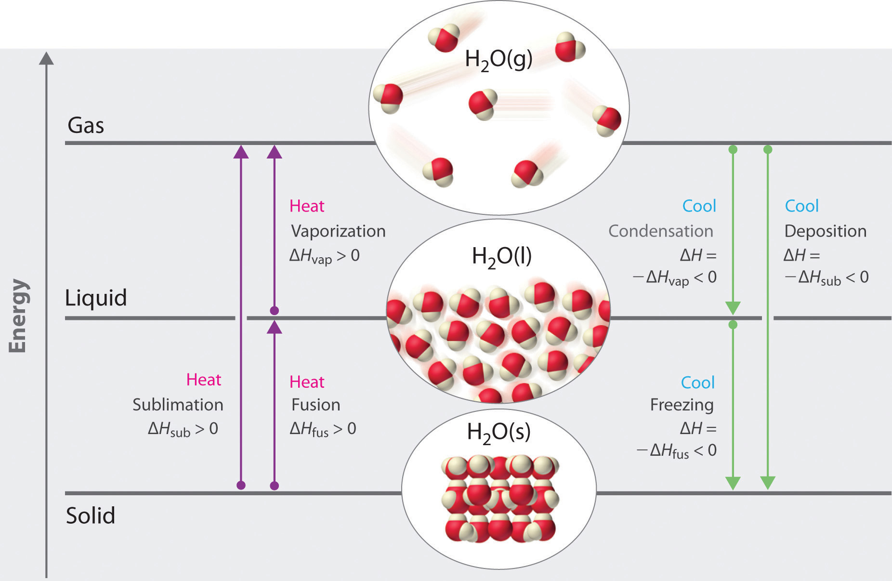Enthalpy changes that accompany phase transitions are indicated by purple and green arrows.
Phase changes are always accompanied by a change in the energy of a system. For example, converting a liquid, in which the molecules are close together, to a gas, in which the molecules are, on average, far apart, requires an input of energy (heat) to give the molecules enough kinetic energy to allow them to overcome the intermolecular attractive forces. The stronger the attractive forces, the more energy is needed to overcome them. Solids, which are highly ordered, have the strongest intermolecular interactions, whereas gases, which are very disordered, have the weakest. Thus any transition from a more ordered to a less ordered state (solid to liquid, liquid to gas, or solid to gas) requires an input of energy; it is endothermic. Conversely, any transition from a less ordered to a more ordered state (liquid to solid, gas to liquid, or gas to solid) releases energy; it is exothermic. The energy change associated with each common phase change is shown in Figure 11.17 "The Three Phases of Matter and the Processes That Interconvert Them When the Temperature Is Changed".
In Chapter 5 "Energy Changes in Chemical Reactions", we defined the enthalpy changes associated with various chemical and physical processes. The melting points and molar enthalpies of fusion (ΔHfus), the energy required to convert from a solid to a liquid, a process known as fusion (or melting)The conversion of a solid to a liquid., as well as the normal boiling points and enthalpies of vaporization (ΔHvap) of selected compounds are listed in Table 11.6 "Melting and Boiling Points and Enthalpies of Fusion and Vaporization for Selected Substances". The substances with the highest melting points usually have the highest enthalpies of fusion; they tend to be ionic compounds that are held together by very strong electrostatic interactions. Substances with high boiling points are those with strong intermolecular interactions that must be overcome to convert a liquid to a gas, resulting in high enthalpies of vaporization. The enthalpy of vaporization of a given substance is much greater than its enthalpy of fusion because it takes more energy to completely separate molecules (conversion from a liquid to a gas) than to enable them only to move past one another freely (conversion from a solid to a liquid).
Table 11.6 Melting and Boiling Points and Enthalpies of Fusion and Vaporization for Selected Substances
| Substance | Melting Point (°C) | ΔHfus (kJ/mol) | Boiling Point (°C) | ΔHvap (kJ/mol) |
|---|---|---|---|---|
| N2 | −210.0 | 0.71 | −195.8 | 5.6 |
| HCl | −114.2 | 2.00 | −85.1 | 16.2 |
| Br2 | −7.2 | 10.6 | 58.8 | 30.0 |
| CCl4 | −22.6 | 2.56 | 76.8 | 29.8 |
| CH3CH2OH (ethanol) | −114.1 | 4.93 | 78.3 | 38.6 |
| CH3(CH2)4CH3 (n-hexane) | −95.4 | 13.1 | 68.7 | 28.9 |
| H2O | 0 | 6.01 | 100 | 40.7 |
| Na | 97.8 | 2.6 | 883 | 97.4 |
| NaF | 996 | 33.4 | 1704 | 176.1 |
ΔH is positive for any transition from a more ordered to a less ordered state and negative for a transition from a less ordered to a more ordered state.
The direct conversion of a solid to a gas, without an intervening liquid phase, is called sublimationThe conversion of a solid directly to a gas (without an intervening liquid phase).. The amount of energy required to sublime 1 mol of a pure solid is the enthalpy of sublimation (ΔHsub)The enthalpy change that accompanies the conversion of a solid directly to a gas.. Common substances that sublime at standard temperature and pressure (STP; 0°C, 1 atm) include CO2 (dry ice); iodine (Figure 11.18 "The Sublimation of Solid Iodine"); naphthalene, a substance used to protect woolen clothing against moths; and 1,4-dichlorobenzene. As shown in Figure 11.17 "The Three Phases of Matter and the Processes That Interconvert Them When the Temperature Is Changed", the enthalpy of sublimation of a substance is the sum of its enthalpies of fusion and vaporization provided all values are at the same T; this is an application of Hess’s law. (For more information about Hess’s law, see Chapter 5 "Energy Changes in Chemical Reactions", Section 5.2 "Enthalpy").
Equation 11.3
ΔHsub = ΔHfus + ΔHvapFigure 11.18 The Sublimation of Solid Iodine

When solid iodine is heated at ordinary atmospheric pressure, it sublimes. When the I2 vapor comes in contact with a cold surface, it deposits I2 crystals.
Fusion, vaporization, and sublimation are endothermic processes; they occur only with the absorption of heat. Anyone who has ever stepped out of a swimming pool on a cool, breezy day has felt the heat loss that accompanies the evaporation of water from the skin. Our bodies use this same phenomenon to maintain a constant temperature: we perspire continuously, even when at rest, losing about 600 mL of water daily by evaporation from the skin. We also lose about 400 mL of water as water vapor in the air we exhale, which also contributes to cooling. Refrigerators and air-conditioners operate on a similar principle: heat is absorbed from the object or area to be cooled and used to vaporize a low-boiling-point liquid, such as ammonia or the chlorofluorocarbons (CFCs) and the hydrofluorocarbons (HCFCs) discussed in Chapter 3 "Chemical Reactions" in connection with the ozone layer. The vapor is then transported to a different location and compressed, thus releasing and dissipating the heat. Likewise, ice cubes efficiently cool a drink not because of their low temperature but because heat is required to convert ice at 0°C to liquid water at 0°C, as demonstrated later in Example 8.
The processes on the right side of Figure 11.17 "The Three Phases of Matter and the Processes That Interconvert Them When the Temperature Is Changed"—freezing, condensation, and deposition, which are the reverse of fusion, sublimation, and vaporization—are exothermic. Thus heat pumps that use refrigerants are essentially air-conditioners running in reverse. Heat from the environment is used to vaporize the refrigerant, which is then condensed to a liquid in coils within a house to provide heat. The energy changes that occur during phase changes can be quantified by using a heating or cooling curve.
Figure 11.19 "A Heating Curve for Water" shows a heating curveA plot of the temperature of a substance versus the heat added or versus the heating time at a constant rate of heating., a plot of temperature versus heating time, for a 75 g sample of water. The sample is initially ice at 1 atm and −23°C; as heat is added, the temperature of the ice increases linearly with time. The slope of the line depends on both the mass of the ice and the specific heat (Cs)The number of joules required to raise the temperature of 1 g of a substance by 1°C. of ice, which is the number of joules required to raise the temperature of 1 g of ice by 1°C. As the temperature of the ice increases, the water molecules in the ice crystal absorb more and more energy and vibrate more vigorously. At the melting point, they have enough kinetic energy to overcome attractive forces and move with respect to one another. As more heat is added, the temperature of the system does not increase further but remains constant at 0°C until all the ice has melted. Once all the ice has been converted to liquid water, the temperature of the water again begins to increase. Now, however, the temperature increases more slowly than before because the specific heat capacity of water is greater than that of ice. When the temperature of the water reaches 100°C, the water begins to boil. Here, too, the temperature remains constant at 100°C until all the water has been converted to steam. At this point, the temperature again begins to rise, but at a faster rate than seen in the other phases because the heat capacity of steam is less than that of ice or water.
Figure 11.19 A Heating Curve for Water
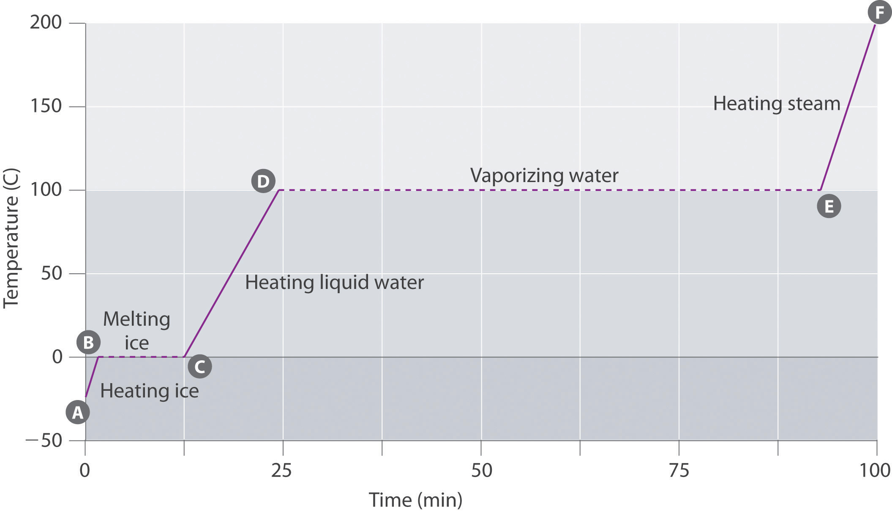This plot of temperature shows what happens to a 75 g sample of ice initially at 1 atm and −23°C as heat is added at a constant rate: A–B: heating solid ice; B–C: melting ice; C–D: heating liquid water; D–E: vaporizing water; E–F: heating steam.
Thus the temperature of a system does not change during a phase change. In this example, as long as even a tiny amount of ice is present, the temperature of the system remains at 0°C during the melting process, and as long as even a small amount of liquid water is present, the temperature of the system remains at 100°C during the boiling process. The rate at which heat is added does not affect the temperature of the ice/water or water/steam mixture because the added heat is being used exclusively to overcome the attractive forces that hold the more condensed phase together. Many cooks think that food will cook faster if the heat is turned up higher so that the water boils more rapidly. Instead, the pot of water will boil to dryness sooner, but the temperature of the water does not depend on how vigorously it boils.
The temperature of a sample does not change during a phase change.
If heat is added at a constant rate, as in Figure 11.19 "A Heating Curve for Water", then the length of the horizontal lines, which represents the time during which the temperature does not change, is directly proportional to the magnitude of the enthalpies associated with the phase changes. In Figure 11.19 "A Heating Curve for Water", the horizontal line at 100°C is much longer than the line at 0°C because the enthalpy of vaporization of water is several times greater than the enthalpy of fusion.
A superheated liquidAn unstable liquid at a temperature and pressure at which it should be a gas. is a sample of a liquid at the temperature and pressure at which it should be a gas. Superheated liquids are not stable; the liquid will eventually boil, sometimes violently. The phenomenon of superheating causes “bumping” when a liquid is heated in the laboratory. When a test tube containing water is heated over a Bunsen burner, for example, one portion of the liquid can easily become too hot. When the superheated liquid converts to a gas, it can push or “bump” the rest of the liquid out of the test tube. Placing a stirring rod or a small piece of ceramic (a “boiling chip”) in the test tube allows bubbles of vapor to form on the surface of the object so the liquid boils instead of becoming superheated. Superheating is the reason a liquid heated in a smooth cup in a microwave oven may not boil until the cup is moved, when the motion of the cup allows bubbles to form.
The cooling curveA plot of the temperature of a substance versus the heat removed or versus the cooling time at a constant rate of cooling., a plot of temperature versus cooling time, in Figure 11.20 "A Cooling Curve for Water" plots temperature versus time as a 75 g sample of steam, initially at 1 atm and 200°C, is cooled. Although we might expect the cooling curve to be the mirror image of the heating curve in Figure 11.19 "A Heating Curve for Water", the cooling curve is not an identical mirror image. As heat is removed from the steam, the temperature falls until it reaches 100°C. At this temperature, the steam begins to condense to liquid water. No further temperature change occurs until all the steam is converted to the liquid; then the temperature again decreases as the water is cooled. We might expect to reach another plateau at 0°C, where the water is converted to ice; in reality, however, this does not always occur. Instead, the temperature often drops below the freezing point for some time, as shown by the little dip in the cooling curve below 0°C. This region corresponds to an unstable form of the liquid, a supercooled liquidA metastable liquid phase that exists below the normal melting point of a substance.. If the liquid is allowed to stand, if cooling is continued, or if a small crystal of the solid phase is added (a seed crystalA solid sample of a substance that can be added to a supercooled liquid or a supersaturated solution to help induce crystallization.), the supercooled liquid will convert to a solid, sometimes quite suddenly. As the water freezes, the temperature increases slightly due to the heat evolved during the freezing process and then holds constant at the melting point as the rest of the water freezes. Subsequently, the temperature of the ice decreases again as more heat is removed from the system.
Figure 11.20 A Cooling Curve for Water
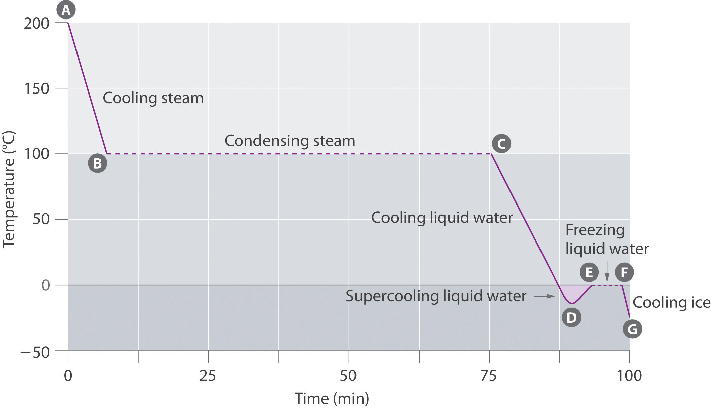This plot of temperature shows what happens to a 75 g sample of steam initially at 1 atm and 200°C as heat is removed at a constant rate: A–B: cooling steam; B–C: condensing steam; C–D: cooling liquid water to give a supercooled liquid; D–E: warming the liquid as it begins to freeze; E–F: freezing liquid water; F–G: cooling ice.
Supercooling effects have a huge impact on Earth’s climate. For example, supercooling of water droplets in clouds can prevent the clouds from releasing precipitation over regions that are persistently arid as a result. Clouds consist of tiny droplets of water, which in principle should be dense enough to fall as rain. In fact, however, the droplets must aggregate to reach a certain size before they can fall to the ground. Usually a small particle (a nucleus) is required for the droplets to aggregate; the nucleus can be a dust particle, an ice crystal, or a particle of silver iodide dispersed in a cloud during seeding (a method of inducing rain). Unfortunately, the small droplets of water generally remain as a supercooled liquid down to about −10°C, rather than freezing into ice crystals that are more suitable nuclei for raindrop formation. One approach to producing rainfall from an existing cloud is to cool the water droplets so that they crystallize to provide nuclei around which raindrops can grow. This is best done by dispersing small granules of solid CO2 (dry ice) into the cloud from an airplane. Solid CO2 sublimes directly to the gas at pressures of 1 atm or lower, and the enthalpy of sublimation is substantial (25.3 kJ/mol). As the CO2 sublimes, it absorbs heat from the cloud, often with the desired results.
If a 50.0 g ice cube at 0.0°C is added to 500 mL of tea at 20.0°C, what is the temperature of the tea when the ice cube has just melted? Assume that no heat is transferred to or from the surroundings. The density of water (and iced tea) is 1.00 g/mL over the range 0°C–20°C, the specific heats of liquid water and ice are 4.184 J/(g·°C) and 2.062 J/(g·°C), respectively, and the enthalpy of fusion of ice is 6.01 kJ/mol.
Given: mass, volume, initial temperature, density, specific heats, and ΔHfus
Asked for: final temperature
Strategy:
Substitute the values given into the general equation relating heat gained to heat lost (Equation 5.39) to obtain the final temperature of the mixture.
Solution:
Recall from Chapter 5 "Energy Changes in Chemical Reactions" that when two substances or objects at different temperatures are brought into contact, heat will flow from the warmer one to the cooler. The amount of heat that flows is given by
q = mCsΔTwhere q is heat, m is mass, Cs is the specific heat, and ΔT is the temperature change. Eventually, the temperatures of the two substances will become equal at a value somewhere between their initial temperatures. Calculating the temperature of iced tea after adding an ice cube is slightly more complicated. The general equation relating heat gained and heat lost is still valid, but in this case we also have to take into account the amount of heat required to melt the ice cube from ice at 0.0°C to liquid water at 0.0°C:
Exercise
Suppose you are overtaken by a blizzard while ski touring and you take refuge in a tent. You are thirsty, but you forgot to bring liquid water. You have a choice of eating a few handfuls of snow (say 400 g) at −5.0°C immediately to quench your thirst or setting up your propane stove, melting the snow, and heating the water to body temperature before drinking it. You recall that the survival guide you leafed through at the hotel said something about not eating snow, but you can’t remember why—after all, it’s just frozen water. To understand the guide’s recommendation, calculate the amount of heat that your body will have to supply to bring 400 g of snow at −5.0°C to your body’s internal temperature of 37°C. Use the data in Example 8
Answer: 200 kJ (4.1 kJ to bring the ice from −5.0°C to 0.0°C, 133.6 kJ to melt the ice at 0.0°C, and 61.9 kJ to bring the water from 0.0°C to 37°C), which is energy that would not have been expended had you first melted the snow.
Changes of state are examples of phase changes, or phase transitions. All phase changes are accompanied by changes in the energy of a system. Changes from a more-ordered state to a less-ordered state (such as a liquid to a gas) are endothermic. Changes from a less-ordered state to a more-ordered state (such as a liquid to a solid) are always exothermic. The conversion of a solid to a liquid is called fusion (or melting). The energy required to melt 1 mol of a substance is its enthalpy of fusion (ΔHfus). The energy change required to vaporize 1 mol of a substance is the enthalpy of vaporization (ΔHvap). The direct conversion of a solid to a gas is sublimation. The amount of energy needed to sublime 1 mol of a substance is its enthalpy of sublimation (ΔHsub) and is the sum of the enthalpies of fusion and vaporization. Plots of the temperature of a substance versus heat added or versus heating time at a constant rate of heating are called heating curves. Heating curves relate temperature changes to phase transitions. A superheated liquid, a liquid at a temperature and pressure at which it should be a gas, is not stable. A cooling curve is not exactly the reverse of the heating curve because many liquids do not freeze at the expected temperature. Instead, they form a supercooled liquid, a metastable liquid phase that exists below the normal melting point. Supercooled liquids usually crystallize on standing, or adding a seed crystal of the same or another substance can induce crystallization.
In extremely cold climates, snow can disappear with no evidence of its melting. How can this happen? What change(s) in state are taking place? Would you expect this phenomenon to be more common at high or low altitudes? Explain your answer.
Why do car manufacturers recommend that an automobile should not be left standing in subzero temperatures if its radiator contains only water? Car manufacturers also warn car owners that they should check the fluid level in a radiator only when the engine is cool. What is the basis for this warning? What is likely to happen if it is ignored?
Use Hess’s law and a thermochemical cycle to show that, for any solid, the enthalpy of sublimation is equal to the sum of the enthalpy of fusion of the solid and the enthalpy of vaporization of the resulting liquid.
Three distinct processes occur when an ice cube at −10°C is used to cool a glass of water at 20°C. What are they? Which causes the greatest temperature change in the water?
When frost forms on a piece of glass, crystals of ice are deposited from water vapor in the air. How is this process related to sublimation? Describe the energy changes that take place as the water vapor is converted to frost.
What phase changes are involved in each process? Which processes are exothermic, and which are endothermic?
What phase changes are involved in each process? Which processes are exothermic, and which are endothermic?
Why do substances with high enthalpies of fusion tend to have high melting points?
Why is the enthalpy of vaporization of a compound invariably much larger than its enthalpy of fusion?
What is the opposite of fusion, sublimation, and condensation? Describe the phase change in each pair of opposing processes and state whether each phase change is exothermic or endothermic.
Draw a typical heating curve (temperature versus amount of heat added at a constant rate) for conversion of a solid to a liquid and then to a gas. What causes some regions of the plot to have a positive slope? What is happening in the regions of the plot where the curve is horizontal, meaning that the temperature does not change even though heat is being added?
If you know the mass of a sample of a substance, how could you use a heating curve to calculate the specific heat of the substance, as well as the change in enthalpy associated with a phase change?
Draw the heating curve for a liquid that has been superheated. How does this differ from a normal heating curve for a liquid? Draw the cooling curve for a liquid that has been supercooled. How does this differ from a normal cooling curve for a liquid?
When snow disappears without melting, it must be subliming directly from the solid state to the vapor state. The rate at which this will occur depends solely on the partial pressure of water, not on the total pressure due to other gases. Consequently, altitude (and changes in atmospheric pressure) will not affect the rate of sublimation directly.
The general equations and enthalpy changes for the changes of state involved in converting a solid to a gas are:
The relationship between these enthalpy changes is shown schematically in the thermochemical cycle below:
The formation of frost on a surface is an example of deposition, which is the reverse of sublimation. The change in enthalpy for deposition is equal in magnitude, but opposite in sign, to ΔHsub, which is a positive number: ΔHsub = ΔHfus + ΔHvap.
The enthalpy of vaporization is larger than the enthalpy of fusion because vaporization requires the addition of enough energy to disrupt all intermolecular interactions and create a gas in which the molecules move essentially independently. In contrast, fusion requires much less energy, because the intermolecular interactions in a liquid and a solid are similar in magnitude in all condensed phases. Fusion requires only enough energy to overcome the intermolecular interactions that lock molecules in place in a lattice, thereby allowing them to move more freely.
The portions of the curve with a positive slope correspond to heating a single phase, while the horizontal portions of the curve correspond to phase changes. During a phase change, the temperature of the system does not change, because the added heat is melting the solid at its melting point or evaporating the liquid at its boiling point.
A superheated liquid exists temporarily as liquid with a temperature above the normal boiling point of the liquid. When a supercooled liquid boils, the temperature drops as the liquid is converted to vapor.
Conversely, a supercooled liquid exists temporarily as a liquid with a temperature lower than the normal melting point of the solid. As shown below, when a supercooled liquid crystallizes, the temperature increases as the liquid is converted to a solid.
The density of oxygen at 1 atm and various temperatures is given in the following table. Plot the data and use your graph to predict the normal boiling point of oxygen.
| T (K) | 60 | 70 | 80 | 90 | 100 | 120 | 140 |
| d (mol/L) | 40.1 | 38.6 | 37.2 | 35.6 | 0.123 | 0.102 | 0.087 |
The density of propane at 1 atm and various temperatures is given in the following table. Plot the data and use your graph to predict the normal boiling point of propane.
| T (K) | 100 | 125 | 150 | 175 | 200 | 225 | 250 | 275 |
| d (mol/L) | 16.3 | 15.7 | 15.0 | 14.4 | 13.8 | 13.2 | 0.049 | 0.044 |
Draw the cooling curve for a sample of the vapor of a compound that has a melting point of 34°C and a boiling point of 77°C as it is cooled from 100°C to 0°C.
Propionic acid has a melting point of −20.8°C and a boiling point of 141°C. Draw a heating curve showing the temperature versus time as heat is added at a constant rate to show the behavior of a sample of propionic acid as it is heated from −50°C to its boiling point. What happens above 141°C?
A 0.542 g sample of I2 requires 96.1 J of energy to be converted to vapor. What is the enthalpy of sublimation of I2?
A 2.0 L sample of gas at 210°C and 0.762 atm condenses to give 1.20 mL of liquid, and 476 J of heat is released during the process. What is the enthalpy of vaporization of the compound?
One fuel used for jet engines and rockets is aluminum borohydride [Al(BH4)3], a liquid that readily reacts with water to produce hydrogen. The liquid has a boiling point of 44.5°C. How much energy is needed to vaporize 1.0 kg of aluminum borohydride at 20°C, given a ΔHvap of 30 kJ/mol and a molar heat capacity (Cp) of 194.6 J/(mol·K)?
How much energy is released when freezing 100.0 g of dimethyl disulfide (C2H6S2) initially at 20°C? Use the following information: melting point = −84.7°C, ΔHfus = 9.19 kJ/mol, Cp = 118.1 J/(mol·K).
The following four problems use the following information (the subscript p indicates measurements taken at constant pressure): ΔHfus(H2O) = 6.01 kJ/mol, ΔHvap(H2O) = 40.66 kJ/mol, Cp(s)(crystalline H2O) = 38.02 J/(mol·K), Cp(l)(liquid H2O) = 75.35 J/(mol·K), and Cp(g)(H2O gas) = 33.60 J/(mol·K).
How much heat is released in the conversion of 1.00 L of steam at 21.9 atm and 200°C to ice at −6.0°C and 1 atm?
How much heat must be applied to convert a 1.00 g piece of ice at −10°C to steam at 120°C?
How many grams of boiling water must be added to a glass with 25.0 g of ice at −3°C to obtain a liquid with a temperature of 45°C?
How many grams of ice at −5.0°C must be added to 150.0 g of water at 22°C to give a final temperature of 15°C?
The transition from a liquid to a gaseous phase is accompanied by a drastic decrease in density. According to the data in the table and the plot, the boiling point of liquid oxygen is between 90 and 100 K (actually 90.2 K).
45.0 kJ/mol
488 kJ
32.6 kJ
57 g
In Chapter 10 "Gases", Section 10.8 "The Behavior of Real Gases", we saw that a combination of high pressure and low temperature allows gases to be liquefied. As we increase the temperature of a gas, liquefaction becomes more and more difficult because higher and higher pressures are required to overcome the increased kinetic energy of the molecules. In fact, for every substance, there is some temperature above which the gas can no longer be liquefied, regardless of pressure. This temperature is the critical temperature (Tc)The highest temperature at which a substance can exist as a liquid, regardless of the applied pressure., the highest temperature at which a substance can exist as a liquid. Above the critical temperature, the molecules have too much kinetic energy for the intermolecular attractive forces to hold them together in a separate liquid phase. Instead, the substance forms a single phase that completely occupies the volume of the container. Substances with strong intermolecular forces tend to form a liquid phase over a very large temperature range and therefore have high critical temperatures. Conversely, substances with weak intermolecular interactions have relatively low critical temperatures. Each substance also has a critical pressure (Pc)The minimum pressure needed to liquefy a substance at its critical temperature., the minimum pressure needed to liquefy it at the critical temperature. The combination of critical temperature and critical pressure is called the critical pointThe combination of the critical temperature and the critical pressure of a substance. of a substance. The critical temperatures and pressures of several common substances are listed in Table 11.7 "Critical Temperatures and Pressures of Some Simple Substances".
High-boiling-point, nonvolatile liquids have high critical temperatures and vice versa.
Table 11.7 Critical Temperatures and Pressures of Some Simple Substances
| Substance | Tc (°C) | Pc (atm) |
|---|---|---|
| NH3 | 132.4 | 113.5 |
| CO2 | 31.0 | 73.8 |
| CH3CH2OH (ethanol) | 240.9 | 61.4 |
| He | −267.96 | 2.27 |
| Hg | 1477 | 1587 |
| CH4 | −82.6 | 46.0 |
| N2 | −146.9 | 33.9 |
| H2O | 374.0 | 217.7 |
To understand what happens at the critical point, consider the effects of temperature and pressure on the densities of liquids and gases, respectively. As the temperature of a liquid increases, its density decreases. As the pressure of a gas increases, its density increases. At the critical point, the liquid and gas phases have exactly the same density, and only a single phase exists. This single phase is called a supercritical fluidThe single, dense fluid phase that exists above the critical temperature of a substance., which exhibits many of the properties of a gas but has a density more typical of a liquid. For example, the density of water at its critical point (T = 374°C, P = 217.7 atm) is 0.32 g/mL, about one-third that of liquid water at room temperature but much greater than that of water vapor under most conditions. The transition between a liquid/gas mixture and a supercritical phase is demonstrated for a sample of benzene in Figure 11.21 "Supercritical Benzene". At the critical temperature, the meniscus separating the liquid and gas phases disappears.
Figure 11.21 Supercritical Benzene

Below the critical temperature of benzene (Tc = 289°C), the meniscus between the liquid and gas phases is apparent. At the critical temperature, the meniscus disappears because the density of the vapor is equal to the density of the liquid. Above Tc, a dense homogeneous fluid fills the tube.
In the last few years, supercritical fluids have evolved from laboratory curiosities to substances with important commercial applications. For example, carbon dioxide has a low critical temperature (31°C), a comparatively low critical pressure (73 atm), and low toxicity, making it easy to contain and relatively safe to manipulate. Because many substances are quite soluble in supercritical CO2, commercial processes that use it as a solvent are now well established in the oil industry, the food industry, and others. Supercritical CO2 is pumped into oil wells that are no longer producing much oil to dissolve the residual oil in the underground reservoirs. The less-viscous solution is then pumped to the surface, where the oil can be recovered by evaporation (and recycling) of the CO2. In the food, flavor, and fragrance industry, supercritical CO2 is used to extract components from natural substances for use in perfumes, remove objectionable organic acids from hops prior to making beer, and selectively extract caffeine from whole coffee beans without removing important flavor components. The latter process was patented in 1974, and now virtually all decaffeinated coffee is produced this way. The earlier method used volatile organic solvents such as methylene chloride (dichloromethane [CH2Cl2], boiling point = 40°C), which is difficult to remove completely from the beans and is known to cause cancer in laboratory animals at high doses.
Arrange methanol, n-butane, n-pentane, and N2O in order of increasing critical temperatures.
Given: compounds
Asked for: order of increasing critical temperatures
Strategy:
A Identify the intermolecular forces in each molecule and then assess the strengths of those forces.
B Arrange the compounds in order of increasing critical temperatures.
Solution:
A The critical temperature depends on the strength of the intermolecular interactions that hold a substance together as a liquid. In N2O, a slightly polar substance, weak dipole–dipole interactions and London dispersion forces are important. Butane (C4H10) and pentane (C5H12) are larger, nonpolar molecules that exhibit only London dispersion forces. Methanol, in contrast, should have substantial intermolecular hydrogen bonding interactions. Because hydrogen bonds are stronger than the other intermolecular forces, methanol will have the highest Tc. London forces are more important for pentane than for butane because of its larger size, so n-pentane will have a higher Tc than n-butane. The only remaining question is whether N2O is polar enough to have stronger intermolecular interactions than pentane or butane. Because the electronegativities of O and N are quite similar, the answer is probably no, so N2O should have the lowest Tc. B We therefore predict the order of increasing critical temperatures as N2O < n-butane < n-pentane < methanol. The actual values are N2O (36.9°C) < n-butane (152.0°C) < n-pentane (196.9°C) < methanol (239.9°C). This is the same order as their normal boiling points—N2O (−88.7°C) < n-butane (−0.2°C) < n-pentane (36.0°C) < methanol (65°C)—because both critical temperature and boiling point depend on the relative strengths of the intermolecular interactions.
Exercise
Arrange ethanol, methanethiol (CH3SH), ethane, and n-hexanol in order of increasing critical temperatures.
Answer: ethane (32.3°C) < methanethiol (196.9°C) < ethanol (240.9°C) < n-hexanol (336.9°C)
Heating a salt to its melting point produces a molten saltA salt that has been heated to its melting point.. If we heated a sample of solid NaCl to its melting point of 801°C, for example, it would melt to give a stable liquid that conducts electricity. The characteristics of molten salts other than electrical conductivity are their high heat capacity, ability to attain very high temperatures (over 700°C) as a liquid, and utility as solvents because of their relatively low toxicity.
Molten salts have many uses in industry and the laboratory. For example, in solar power towers in the desert of California, mirrors collect and focus sunlight to melt a mixture of sodium nitrite and sodium nitrate. The heat stored in the molten salt is used to produce steam that drives a steam turbine and a generator, thereby producing electricity from the sun for southern California.
Due to their low toxicity and high thermal efficiency, molten salts have also been used in nuclear reactors to enable operation at temperatures greater than 750°C. One prototype reactor tested in the 1950s used a fuel and a coolant consisting of molten fluoride salts, including NaF, ZrF4, and UF4. Molten salts are also useful in catalytic processes such as coal gasification, in which carbon and water react at high temperatures to form CO and H2.
Molten salts are good electrical conductors, have a high heat capacity, can maintain a high temperature as a liquid, and are relatively nontoxic.
Although molten salts have proven highly useful, more recently chemists have been studying the characteristics of ionic liquidsIonic substances that are liquids at room temperature and pressure and that consist of small, symmetrical anions combined with larger, symmetrical organic cations that prevent the formation of a highly organized structure., ionic substances that are liquid at room temperature and pressure. These substances consist of small, symmetrical anions, such as PF6− and BF4−, combined with larger, asymmetrical organic cations that prevent the formation of a highly organized structure, resulting in a low melting point. By varying the cation and the anion, chemists can tailor the liquid to specific needs, such as using a solvent in a given reaction or extracting specific molecules from a solution. For example, an ionic liquid consisting of a bulky cation and anions that bind metal contaminants such as mercury and cadmium ions can remove those toxic metals from the environment. A similar approach has been applied to removing uranium and americium from water contaminated by nuclear waste.
Ionic liquids consist of small, symmetrical anions combined with larger asymmetrical cations, which produce a highly polar substance that is a liquid at room temperature and pressure.
The initial interest in ionic liquids centered on their use as a low-temperature alternative to molten salts in batteries for missiles, nuclear warheads, and space probes. Further research revealed that ionic liquids had other useful properties—for example, some could dissolve the black rubber of discarded tires, allowing it to be recovered for recycling. Others could be used to produce commercially important organic compounds with high molecular mass, such as Styrofoam and Plexiglas, at rates 10 times faster than traditional methods.
A substance cannot form a liquid above its critical temperature, regardless of the applied pressure. Above the critical temperature, the molecules have enough kinetic energy to overcome the intermolecular attractive forces. The minimum pressure needed to liquefy a substance at its critical temperature is its critical pressure. The combination of the critical temperature and critical pressure of a substance is its critical point. Above the critical temperature and pressure, a substance exists as a dense fluid called a supercritical fluid, which resembles a gas in that it completely fills its container but has a density comparable to that of a liquid. A molten salt is a salt heated to its melting point, giving a stable liquid that conducts electricity. Ionic liquids are ionic substances that are liquids at room temperature. Their disorganized structure results in a low melting point.
Describe the changes that take place when a liquid is heated above its critical temperature. How does this affect the physical properties?
What is meant by the term critical pressure? What is the effect of increasing the pressure on a gas to above its critical pressure? Would it make any difference if the temperature of the gas was greater than its critical temperature?
Do you expect the physical properties of a supercritical fluid to be more like those of the gas or the liquid phase? Explain. Can an ideal gas form a supercritical fluid? Why or why not?
What are the limitations in using supercritical fluids to extract organic materials? What are the advantages?
Describe the differences between a molten salt and an ionic liquid. Under what circumstances would an ionic liquid be preferred over a molten salt?
The state exhibited by a given sample of matter depends on the identity, temperature, and pressure of the sample. A phase diagramA graphic summary of the physical state of a substance as a function of temperature and pressure in a closed system. is a graphic summary of the physical state of a substance as a function of temperature and pressure in a closed system.
A typical phase diagram consists of discrete regions that represent the different phases exhibited by a substance (Figure 11.22 "A Typical Phase Diagram for a Substance That Exhibits Three Phases—Solid, Liquid, and Gas—and a Supercritical Region"). Each region corresponds to the range of combinations of temperature and pressure over which that phase is stable. The combination of high pressure and low temperature (upper left of Figure 11.22 "A Typical Phase Diagram for a Substance That Exhibits Three Phases—Solid, Liquid, and Gas—and a Supercritical Region") corresponds to the solid phase, whereas the gas phase is favored at high temperature and low pressure (lower right). The combination of high temperature and high pressure (upper right) corresponds to a supercritical fluid.
Figure 11.22 A Typical Phase Diagram for a Substance That Exhibits Three Phases—Solid, Liquid, and Gas—and a Supercritical Region
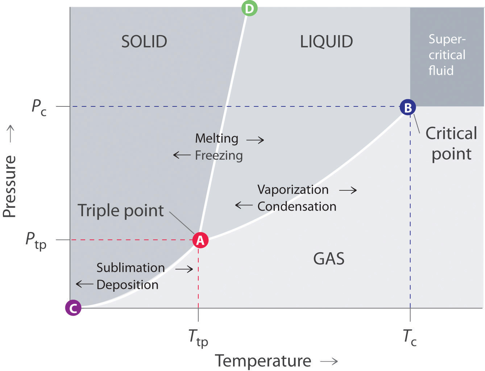The solid phase is favored at low temperature and high pressure; the gas phase is favored at high temperature and low pressure.
The lines in a phase diagram correspond to the combinations of temperature and pressure at which two phases can coexist in equilibrium. In Figure 11.22 "A Typical Phase Diagram for a Substance That Exhibits Three Phases—Solid, Liquid, and Gas—and a Supercritical Region", the line that connects points A and D separates the solid and liquid phases and shows how the melting point of a solid varies with pressure. The solid and liquid phases are in equilibrium all along this line; crossing the line horizontally corresponds to melting or freezing. The line that connects points A and B is the vapor pressure curve of the liquid, which we discussed in Section 11.4 "Vapor Pressure". It ends at the critical point, beyond which the substance exists as a supercritical fluid. The line that connects points A and C is the vapor pressure curve of the solid phase. Along this line, the solid is in equilibrium with the vapor phase through sublimation and deposition. Finally, point A, where the solid/liquid, liquid/gas, and solid/gas lines intersect, is the triple pointThe point in a phase diagram where the solid/liquid, liquid/gas, and solid/gas lines intersect; it represents the only combination of temperature and pressure at which all three phases are in equilibrium and can therefore exist simultaneously.; it is the only combination of temperature and pressure at which all three phases (solid, liquid, and gas) are in equilibrium and can therefore exist simultaneously. Because no more than three phases can ever coexist, a phase diagram can never have more than three lines intersecting at a single point.
Remember that a phase diagram, such as the one in Figure 11.22 "A Typical Phase Diagram for a Substance That Exhibits Three Phases—Solid, Liquid, and Gas—and a Supercritical Region", is for a single pure substance in a closed system, not for a liquid in an open beaker in contact with air at 1 atm pressure. In practice, however, the conclusions reached about the behavior of a substance in a closed system can usually be extrapolated to an open system without a great deal of error.
Figure 11.23 "Two Versions of the Phase Diagram of Water" shows the phase diagram of water and illustrates that the triple point of water occurs at 0.01°C and 0.00604 atm (4.59 mmHg). Far more reproducible than the melting point of ice, which depends on the amount of dissolved air and the atmospheric pressure, the triple point (273.16 K) is used to define the absolute (Kelvin) temperature scale. The triple point also represents the lowest pressure at which a liquid phase can exist in equilibrium with the solid or vapor. At pressures less than 0.00604 atm, therefore, ice does not melt to a liquid as the temperature increases; the solid sublimes directly to water vapor. Sublimation of water at low temperature and pressure can be used to “freeze-dry” foods and beverages. The food or beverage is first cooled to subzero temperatures and placed in a container in which the pressure is maintained below 0.00604 atm. Then, as the temperature is increased, the water sublimes, leaving the dehydrated food (such as that used by backpackers or astronauts) or the powdered beverage (as with freeze-dried coffee).
The phase diagram for water illustrated in part (b) in Figure 11.23 "Two Versions of the Phase Diagram of Water" shows the boundary between ice and water on an expanded scale. The melting curve of ice slopes up and slightly to the left rather than up and to the right as in Figure 11.22 "A Typical Phase Diagram for a Substance That Exhibits Three Phases—Solid, Liquid, and Gas—and a Supercritical Region"; that is, the melting point of ice decreases with increasing pressure; at 100 MPa (987 atm), ice melts at −9°C. Water behaves this way because it is one of the few known substances for which the crystalline solid is less dense than the liquid (others include antimony and bismuth). Increasing the pressure of ice that is in equilibrium with water at 0°C and 1 atm tends to push some of the molecules closer together, thus decreasing the volume of the sample. The decrease in volume (and corresponding increase in density) is smaller for a solid or a liquid than for a gas, but it is sufficient to melt some of the ice.
Figure 11.23 Two Versions of the Phase Diagram of Water
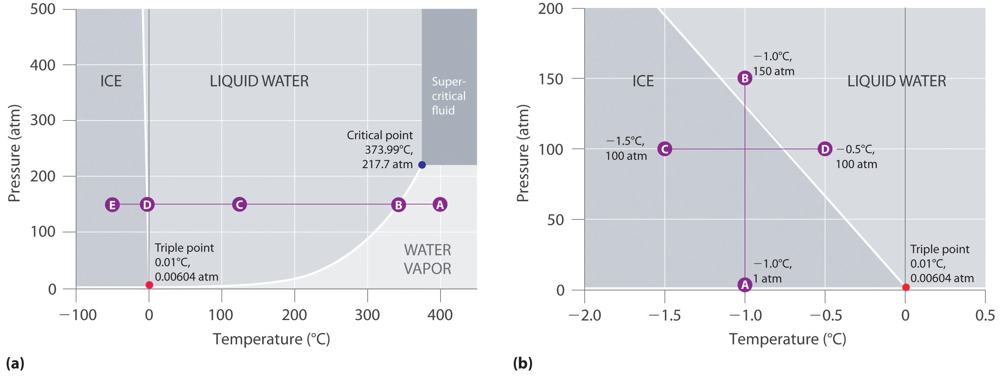(a) In this graph with linear temperature and pressure axes, the boundary between ice and liquid water is almost vertical. (b) This graph with an expanded scale illustrates the decrease in melting point with increasing pressure. (The letters refer to points discussed in Example 10.)
In part (b) in Figure 11.23 "Two Versions of the Phase Diagram of Water", point A is located at P = 1 atm and T = −1.0°C, within the solid (ice) region of the phase diagram. As the pressure increases to 150 atm while the temperature remains the same, the line from point A crosses the ice/water boundary to point B, which lies in the liquid water region. Consequently, applying a pressure of 150 atm will melt ice at −1.0°C. We have already indicated that the pressure dependence of the melting point of water is of vital importance. If the solid/liquid boundary in the phase diagram of water were to slant up and to the right rather than to the left, ice would be denser than water, ice cubes would sink, water pipes would not burst when they freeze, and antifreeze would be unnecessary in automobile engines.
Until recently, many textbooks described ice skating as being possible because the pressure generated by the skater’s blade is high enough to melt the ice under the blade, thereby creating a lubricating layer of liquid water that enables the blade to slide across the ice. Although this explanation is intuitively satisfying, it is incorrect, as we can show by a simple calculation. Recall from Chapter 10 "Gases" that pressure (P) is the force (F) applied per unit area (A):
Equation 11.4
To calculate the pressure an ice skater exerts on the ice, we need to calculate only the force exerted and the area of the skate blade. If we assume a 75.0 kg (165 lb) skater, then the force exerted by the skater on the ice due to gravity is
Equation 11.5
F = mgwhere m is the mass and g is the acceleration due to Earth’s gravity (9.81 m/s2). Thus the force is
Equation 11.6
F = (75.0 kg)(9.81 m/s2) = 736 (kg·m)/s2 = 736 NIf we assume that the skate blades are 2.0 mm wide and 25 cm long, then the area of the bottom of each blade is
Equation 11.7
A = (2.0 × 10−3 m)(25 × 10−2 m) = 5.0 × 10−4 m2If the skater is gliding on one foot, the pressure exerted on the ice is
Equation 11.8
The pressure is much lower than the pressure needed to decrease the melting point of ice by even 1°C, and experience indicates that it is possible to skate even when the temperature is well below freezing. Thus pressure-induced melting of the ice cannot explain the low friction that enables skaters (and hockey pucks) to glide. Recent research indicates that the surface of ice, where the ordered array of water molecules meets the air, consists of one or more layers of almost liquid water. These layers, together with melting induced by friction as a skater pushes forward, appear to account for both the ease with which a skater glides and the fact that skating becomes more difficult below about −7°C, when the number of lubricating surface water layers decreases.
In contrast to the phase diagram of water, the phase diagram of CO2 (Figure 11.24 "The Phase Diagram of Carbon Dioxide") has a more typical melting curve, sloping up and to the right. The triple point is −56.6°C and 5.11 atm, which means that liquid CO2 cannot exist at pressures lower than 5.11 atm. At 1 atm, therefore, solid CO2 sublimes directly to the vapor while maintaining a temperature of −78.5°C, the normal sublimation temperature. Solid CO2 is generally known as dry ice because it is a cold solid with no liquid phase observed when it is warmed. Also notice the critical point at 30.98°C and 72.79 atm. In addition to the uses discussed in Section 11.6 "Critical Temperature and Pressure", supercritical carbon dioxide is emerging as a natural refrigerant, making it a low carbon (and thus a more environmentally friendly) solution for domestic heat pumps.
Figure 11.24 The Phase Diagram of Carbon Dioxide
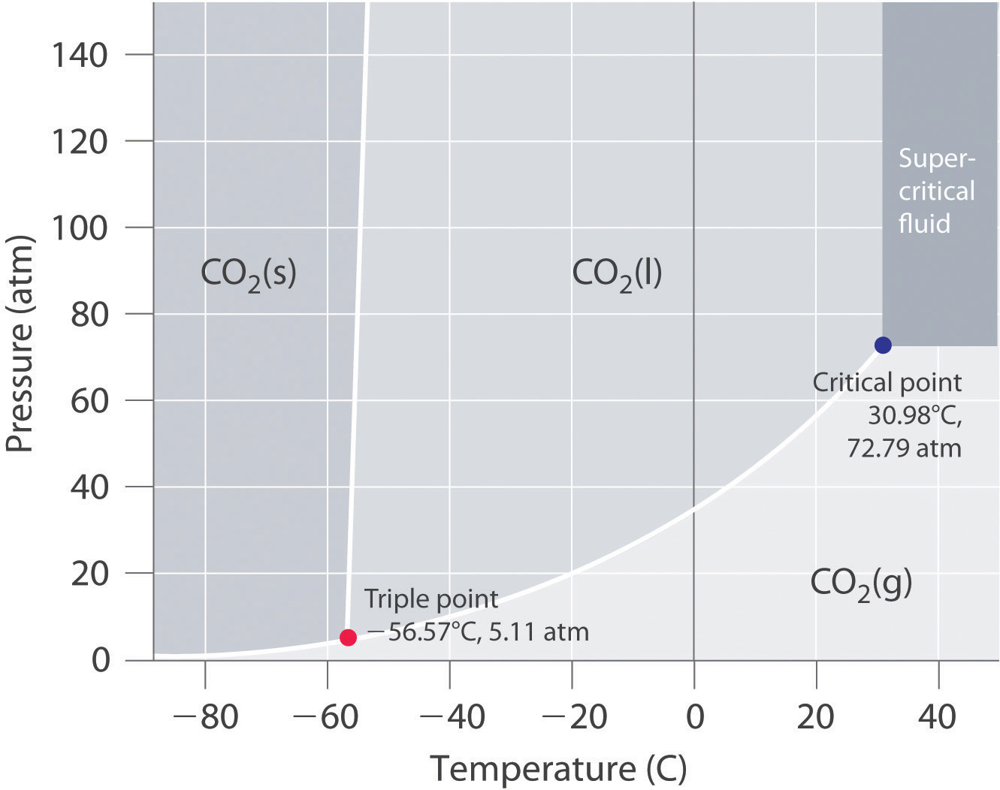Note the critical point, the triple point, and the normal sublimation temperature in this diagram.
Referring to the phase diagram of water in Figure 11.23 "Two Versions of the Phase Diagram of Water",
Given: phase diagram, temperature, and pressure
Asked for: physical form and physical changes
Strategy:
A Identify the region of the phase diagram corresponding to the initial conditions and identify the phase that exists in this region.
B Draw a line corresponding to the given pressure. Move along that line in the appropriate direction (in this case cooling) and describe the phase changes.
Solution:
Exercise
Referring to the phase diagram of water in Figure 11.23 "Two Versions of the Phase Diagram of Water", predict the physical form of a sample of water at −0.0050°C as the pressure is gradually increased from 1.0 mmHg to 218 atm.
Answer: The sample is initially a gas, condenses to a solid as the pressure increases, and then melts when the pressure is increased further to give a liquid.
The states of matter exhibited by a substance under different temperatures and pressures can be summarized graphically in a phase diagram, which is a plot of pressure versus temperature. Phase diagrams contain discrete regions corresponding to the solid, liquid, and gas phases. The solid and liquid regions are separated by the melting curve of the substance, and the liquid and gas regions are separated by its vapor pressure curve, which ends at the critical point. Within a given region, only a single phase is stable, but along the lines that separate the regions, two phases are in equilibrium at a given temperature and pressure. The lines separating the three phases intersect at a single point, the triple point, which is the only combination of temperature and pressure at which all three phases can coexist in equilibrium. Water has an unusual phase diagram: its melting point decreases with increasing pressure because ice is less dense than liquid water. The phase diagram of carbon dioxide shows that liquid carbon dioxide cannot exist at atmospheric pressure. Consequently, solid carbon dioxide sublimes directly to a gas.
A phase diagram is a graphic representation of the stable phase of a substance at any combination of temperature and pressure. What do the lines separating different regions in a phase diagram indicate? What information does the slope of a line in a phase diagram convey about the physical properties of the phases it separates? Can a phase diagram have more than one point where three lines intersect?
If the slope of the line corresponding to the solid/liquid boundary in the phase diagram of water were positive rather than negative, what would be the effect on aquatic life during periods of subzero temperatures? Explain your answer.
The lines in a phase diagram represent boundaries between different phases; at any combination of temperature and pressure that lies on a line, two phases are in equilibrium. It is physically impossible for more than three phases to coexist at any combination of temperature and pressure, but in principle there can be more than one triple point in a phase diagram. The slope of the line separating two phases depends upon their relative densities. For example, if the solid–liquid line slopes up and to the right, the liquid is less dense than the solid, while if it slopes up and to the left, the liquid is denser than the solid.
Naphthalene (C10H8) is the key ingredient in mothballs. It has normal melting and boiling points of 81°C and 218°C, respectively. The triple point of naphthalene is 80°C at 1000 Pa. Use these data to construct a phase diagram for naphthalene and label all the regions of your diagram.
Argon is an inert gas used in welding. It has normal boiling and freezing points of 87.3 K and 83.8 K, respectively. The triple point of argon is 83.8 K at 0.68 atm. Use these data to construct a phase diagram for argon and label all the regions of your diagram.
When cooled, most liquids undergo a simple phase transitionAnother name for a phase change. to an ordered crystalline solid, a relatively rigid substance that has a fixed shape and volume. (For more information on the characteristics of matter, see Chapter 1 "Introduction to Chemistry", Section 1.3 "A Description of Matter".) In the phase diagrams for these liquids, there are no regions between the liquid and solid phases. Thousands of substances are known, however, that exhibit one or more phases intermediate between the liquid state, in which the molecules are free to tumble and move past one another, and the solid state, in which the molecules or ions are rigidly locked into place. In these intermediate phases, the molecules have an ordered arrangement and yet can still flow like a liquid. Hence they are called liquid crystalsA substance that exhibits phases that have properties intermediate between those of a crystalline solid and a normal liquid and possess long-range molecular order but still flow., and their unusual properties have found a wide range of commercial applications. They are used, for example, in the liquid crystal displays (LCDs) in digital watches, calculators, and computer and video displays.
The first documented example of a liquid crystal was reported by the Austrian Frederick Reinitzer in 1888. Reinitzer was studying the properties of a cholesterol derivative, cholesteryl benzoate, and noticed that it behaved strangely as it melted. The white solid first formed a cloudy white liquid phase at 145°C, which reproducibly transformed into a clear liquid at 179°C (Figure 11.25 "Cholesteryl Benzoate"). The transitions were completely reversible: cooling molten cholesteryl benzoate below 179°C caused the clear liquid to revert to a milky one, which then crystallized at the melting point of 145°C.
Figure 11.25 Cholesteryl Benzoate

(a) When the temperature is greater than 179°C, the substance is an isotropic liquid through which images can be seen. (b) When the temperature is between 145°C and 179°C, the substance is in the cholesteric liquid crystalline phase and is an opaque, milky liquid.
In a normal liquid, the molecules possess enough thermal energy to overcome the intermolecular attractive forces and tumble freely. This arrangement of the molecules is described as isotropicThe arrangement of molecules that is equally disordered in all directions., which means that it is equally disordered in all directions. Liquid crystals, in contrast, are anisotropicAn arrangement of molecules in which their properties depend on the direction they are measured.: their properties depend on the direction in which they are viewed. Hence liquid crystals are not as disordered as a liquid because the molecules have some degree of alignment.
Most substances that exhibit the properties of liquid crystals consist of long, rigid rod- or disk-shaped molecules that are easily polarizable and can orient themselves in one of three different ways, as shown in Figure 11.26 "The Arrangement of Molecules in the Nematic, Smectic, and Cholesteric Liquid Crystal Phases". In the nematic phaseOne of three different ways that most liquid crystals can orient themselves. Only the long axes of the molecules are aligned, so they are free to rotate or to slide past one another., the molecules are not layered but are pointed in the same direction. As a result, the molecules are free to rotate or slide past one another. In the smectic phaseOne of three different ways that most liquid crystals can orient themselves. The long axes of the molecules are aligned (similar to the nematic phase), but the molecules are arranged in planes, too., the molecules maintain the general order of the nematic phase but are also aligned in layers. Several variants of the smectic phase are known, depending on the angle formed between the molecular axes and the planes of molecules. The simplest such structure is the so-called smectic A phase, in which the molecules can rotate about their long axes within a given plane, but they cannot readily slide past one another. In the cholesteric phaseOne of three different ways that most liquid crystals can orient themselves. The molecules are arranged in planes (similar to the smectic phase), but each layer is rotated by a certain amount with respect to those above and below it, giving it a helical structure., the molecules are directionally oriented and stacked in a helical pattern, with each layer rotated at a slight angle to the ones above and below it. As the degree of molecular ordering increases from the nematic phase to the cholesteric phase, the liquid becomes more opaque, although direct comparisons are somewhat difficult because most compounds form only one of these liquid crystal phases when the solid is melted or the liquid is cooled.
Figure 11.26 The Arrangement of Molecules in the Nematic, Smectic, and Cholesteric Liquid Crystal Phases

In the nematic phase, only the long axes of the molecules are parallel, and the ends are staggered at random intervals. In the smectic phase, the long axes of the molecules are parallel, and the molecules are also arranged in planes. Finally, in the cholesteric phase, the molecules are arranged in layers; each layer is rotated with respect to the ones above and below it to give a spiral structure. The molecular order increases from the nematic phase to the smectic phase to the cholesteric phase, and the phases become increasingly opaque.
Molecules that form liquid crystals tend to be rigid molecules with polar groups that exhibit relatively strong dipole–dipole or dipole–induced dipole interactions, hydrogen bonds, or some combination of both. Some examples of substances that form liquid crystals are listed in Figure 11.27 "Structures of Typical Molecules That Form Liquid Crystals*" along with their characteristic phase transition temperature ranges. In most cases, the intermolecular interactions are due to the presence of polar or polarizable groups. Aromatic rings and multiple bonds between carbon and nitrogen or oxygen are especially common. Moreover, many liquid crystals are composed of molecules with two similar halves connected by a unit having a multiple bond.
Figure 11.27 Structures of Typical Molecules That Form Liquid Crystals*

*Polar or polarizable groups are indicated in blue.
Because of their anisotropic structures, liquid crystals exhibit unusual optical and electrical properties. The intermolecular forces are rather weak and can be perturbed by an applied electric field. Because the molecules are polar, they interact with an electric field, which causes them to change their orientation slightly. Nematic liquid crystals, for example, tend to be relatively translucent, but many of them become opaque when an electric field is applied and the molecular orientation changes. This behavior is ideal for producing dark images on a light or an opalescent background, and it is used in the LCDs in digital watches; handheld calculators; flat-screen monitors; and car, ship, and aircraft instrumentation. Although each application differs in the details of its construction and operation, the basic principles are similar, as illustrated in Figure 11.28 "Schematic Drawing of an LCD Device, Showing the Various Layers".
Liquid crystals tend to form from long, rigid molecules with polar groups.
Figure 11.28 Schematic Drawing of an LCD Device, Showing the Various Layers

Applying a voltage to selected segments of the device will produce any of the numbers. The device is a sandwich that contains several very thin layers, consisting of (from top to bottom) a sheet of polarizer to produce polarized light, a transparent electrode, a thin layer of a liquid crystalline substance, a second transparent electrode, a second polarizer, and a screen. Applying an electrical voltage to the liquid crystal changes its orientation slightly, which rotates the plane of the polarized light and makes the area appear dark.
Changes in molecular orientation that are dependent on temperature result in an alteration of the wavelength of reflected light. Changes in reflected light produce a change in color, which can be customized by using either a single type of liquid crystalline material or mixtures. It is therefore possible to build a liquid crystal thermometer that indicates temperature by color (Figure 11.29 "An Inexpensive Fever Thermometer That Uses Liquid Crystals") and to use liquid crystals in heat-sensitive films to detect flaws in electronic board connections where overheating can occur.
Figure 11.29 An Inexpensive Fever Thermometer That Uses Liquid Crystals

Each section contains a liquid crystal sample with a different liquid crystalline range. The section whose liquid crystalline range corresponds to the temperature of the body becomes translucent (here shown in green), indicating the temperature.
We also see the effect of liquid crystals in nature. Iridescent green beetles, known as jewel beetles, change color because of the light-reflecting properties of the cells that make up their external skeletons, not because of light absorption from their pigment. The cells form helices with a structure like those found in cholesteric liquid crystals. When the pitch of the helix is close to the wavelength of visible light, the cells reflect light with wavelengths that lead to brilliant metallic colors. Because a color change occurs depending on a person’s angle of view, researchers in New Zealand are studying the beetles to develop a thin material that can be used as a currency security measure. The automobile industry is also interested in exploring such materials for use in paints that would change color at different viewing angles.
With only molecular structure as a guide, one cannot precisely predict which of the various liquid crystalline phases a given compound will actually form. One can, however, identify molecules containing the kinds of structural features that tend to result in liquid crystalline behavior, as demonstrated in Example 11.
Which molecule is most likely to form a liquid crystalline phase as the isotropic liquid is cooled?
p-azoxyanisole

Given: compounds
Asked for: liquid crystalline behavior
Strategy:
Determine which compounds have a rigid structure and contain polar groups. Those that do are likely to exhibit liquid crystal behavior.
Solution:
Exercise
Which compound is least likely to form a liquid crystal phase?

Answer: (b) Biphenyl; although it is rather long and rigid, it lacks any polar substituents.
Many substances exhibit phases that have properties intermediate between those of a crystalline solid and a normal liquid. These substances, which possess long-range molecular order but still flow like liquids, are called liquid crystals. Liquid crystals are typically long, rigid molecules that can interact strongly with one another; they do not have isotropic structures, which are completely disordered, but rather have anisotropic structures, which exhibit different properties when viewed from different directions. In the nematic phase, only the long axes of the molecules are aligned, whereas in the smectic phase, the long axes of the molecules are parallel and the molecules are arranged in planes. In the cholesteric phase, the molecules are arranged in planes, but each layer is rotated by a certain amount with respect to those above and below it, giving a helical structure.
Describe the common structural features of molecules that form liquid crystals. What kind of intermolecular interactions are most likely to result in a long-chain molecule that exhibits liquid crystalline behavior? Does an electrical field affect these interactions?
What is the difference between an isotropic liquid and an anisotropic liquid? Which is more anisotropic—a cholesteric liquid crystal or a nematic liquid crystal?
Essential Skills 3 in Chapter 4 "Reactions in Aqueous Solution", Section 4.10 "Essential Skills 3", introduced the common, or base-10, logarithms and showed how to use the properties of exponents to perform logarithmic calculations. In this section, we describe natural logarithms, their relationship to common logarithms, and how to do calculations with them using the same properties of exponents.
Many natural phenomena exhibit an exponential rate of increase or decrease. Population growth is an example of an exponential rate of increase, whereas a runner’s performance may show an exponential decline if initial improvements are substantially greater than those that occur at later stages of training. Exponential changes are represented logarithmically by ex, where e is an irrational number whose value is approximately 2.7183. The natural logarithm, abbreviated as ln, is the power x to which e must be raised to obtain a particular number. The natural logarithm of e is 1 (ln e = 1).
Some important relationships between base-10 logarithms and natural logarithms are as follows:
101 = 10 = e2.303 ln ex = x ln 10 = ln(e2.303) = 2.303 log 10 = ln e = 1According to these relationships, ln 10 = 2.303 and log 10 = 1. Because multiplying by 1 does not change an equality,
ln 10 = 2.303 log 10Substituting any value y for 10 gives
ln y = 2.303 log yOther important relationships are as follows:
log Ax = x log A ln ex = x ln e = x = eln xEntering a value x, such as 3.86, into your calculator and pressing the “ln” key gives the value of ln x, which is 1.35 for x = 3.86. Conversely, entering the value 1.35 and pressing “ex” key gives an answer of 3.86.On some calculators, pressing [INV] and then [ln x] is equivalent to pressing [ex]. Hence
eln3.86 = e1.35 = 3.86 ln(e3.86) = 3.86Calculate the natural logarithm of each number and express each as a power of the base e.
Solution:
What number is each value the natural logarithm of?
Solution:
Like common logarithms, natural logarithms use the properties of exponents. We can expand Table 4.5 "Relationships in Base-10 Logarithms" in Essential Skills 3 to include natural logarithms:
| Operation | Exponential Form | Logarithm |
|---|---|---|
| Multiplication | (10a)(10b) = 10a + b | log(ab) = log a + log b |
| (ex)(ey) = ex + y | ln(exey) = ln(ex) + ln(ey) = x + y | |
| Division | ||
| Inverse |
The number of significant figures in a number is the same as the number of digits after the decimal point in its logarithm. For example, the natural logarithm of 18.45 is 2.9151, which means that e2.9151 is equal to 18.45.
Calculate the natural logarithm of each number.
Solution:
The answers obtained using the two methods may differ slightly due to rounding errors.
Calculate the natural logarithm of each number.
Solution:
Please be sure you are familiar with the topics discussed in Essential Skills 6 (Section 11.9 "Essential Skills 6") before proceeding to the Application Problems. Problems marked with a ♦ involve multiple concepts.
During cold periods, workers in the citrus industry often spray water on orange trees to prevent them from being damaged, even though ice forms on the fruit.
♦ Relative humidity is the ratio of the actual partial pressure of water in the air to the vapor pressure of water at that temperature (i.e., if the air was completely saturated with water vapor), multiplied by 100 to give a percentage. On a summer day in the Chesapeake, when the temperature was recorded as 35°C, the partial pressure of water was reported to be 33.9 mmHg.
The following table gives the vapor pressure of water at various temperatures. Calculate the relative humidity.
| T (°C) | 0 | 10 | 30 | 50 | 60 | 80 | 100 |
| P (mmHg) | 4.6 | 9.2 | 31.8 | 92.6 | 150 | 355 | 760 |
♦ Liquids are frequently classified according to their physical properties, such as surface tension, vapor pressure, and boiling point. Such classifications are useful when substitutes are needed for a liquid that might not be available.
♦ In the process of freeze drying, which is used as a preservation method and to aid in the shipping or storage of fruit and biological samples, a sample is cooled and then placed in a compartment in which a very low pressure is maintained, ≈0.01 atm.
♦ Many industrial processes for preparing compounds use “continuous-flow reactors,” which are chemical reaction vessels in which the reactants are mixed and allowed to react as they flow along a tube. The products are removed at a certain distance from the starting point, when the reaction is nearly complete. The key operating parameters in a continuous-flow reactor are temperature, reactor volume, and reactant flow rate. As an industrial chemist, you think you have successfully modified a particular process to produce a higher product yield by substituting one reactant for another. The viscosity of the new reactant is, however, greater than that of the initial reactant.